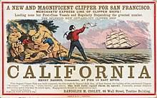
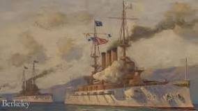

The history of California can be divided into the Native American period (about 10,000 years ago until 1542), the European exploration period (1542–1769), the Spanish colonial period (1769–1821), the Mexican Republic period (1823–1848), and United States statehood (September 9, 1850–present). California was one of the most culturally and linguistically diverse areas in pre-Columbian North America. After contact with Spanish explorers, many of the Native Americans died from foreign diseases and genocide campaigns.[1]
After the Portolá expedition of 1769–1770, Spanish missionaries began setting up 21 California missions on or near the coast of Alta (Upper) California, beginning with the Mission San Diego de Alcala near the location of the modern day city of San Diego, California. During the same period, Spanish military forces built several forts (presidios) and three small towns (pueblos). Two of the pueblos would eventually grow into the cities of Los Angeles and San Jose. After Mexico's Independence was won in 1821, California fell under the jurisdiction of the First Mexican Empire. Fearing the influence of the Roman Catholic church over their newly independent nation, the Mexican government closed all of the missions and nationalized the church's property. They left behind a "Californio" population of several thousand families, with a few small military garrisons. After the Mexican–American War of 1846–1848, The Mexican Republic was forced to relinquish any claim to California to the United States.
The California Gold Rush of 1848–1855 attracted hundreds of thousands of ambitious young people from around the world. Only a few struck it rich, and many returned home disappointed. Most appreciated the other economic opportunities in California, especially in agriculture, and brought their families to join them. California became the 31st U.S. state in the Compromise of 1850 and played a small role in the American Civil War. Chinese immigrants increasingly came under attack from nativists; they were forced out of industry and agriculture and into Chinatowns in the larger cities. As gold petered out, California increasingly became a highly productive agricultural society. The coming of the railroads in 1869 linked its rich economy with the rest of the nation, and attracted a steady stream of settlers. In the late 19th century, Southern California, especially Los Angeles, started to grow rapidly.
History of California before 1900
Main article: History of California before 1900
Pre-contact period
Main article: Indigenous peoples of California
Balthazar, Inhabitant of Northern California, an 1818 portrait of a Miwok man by artist Mikhail Tikhanov.
Different tribes of Native Americans lived in the area that is now California for an estimated 13,000 to 15,000 years. Archeological sites such as, Borax Lake, the Cross Creek Site,[2] Santa Barbara Channel Islands, Santa Barbara Coast’s Sudden Flats, and the Scotts Valley site, CA-SCR-177, offer evidence of human settlement in these areas from 13,000 -7,000 ybp. These people migrated into these areas supported by oceanic resources (an ecological zone referred to as the “Kelp Highway”), which extended from Asia to South America.[3] The different kelps of the Pacific Rim are major contributors to the areas of productivity and biodiversity and support a wide variety of life such as marine mammals, shellfish, fish, seabirds and edible seaweeds. This biodiversity was a key condition that supported human migration and settlement during this early period.[4]
Over 100 tribes and bands inhabited the area.[5] Various estimates of the Native American population in California during the pre-European period range from 100,000 to 300,000. California's population held about one-third of all Native Americans in the land now governed by the United States.[6]
The native horticulturalists practiced various forms of forest gardening and fire-stick farming in the forests, grasslands, mixed woodlands, and wetlands, ensuring that desired food and medicine plants continued to be available. The natives controlled fire on a localized basis to create a low-intensity fire ecology to facilitate the growth of food and fiber materials and may have sustained a low-density agriculture in loose rotation; a sort of "wild" permaculture.[7][8][9][10][11]
European exploration
The 1562 map of the Americas, created by Spanish cartographer Diego Gutiérrez, which applied the name California for the first time.
California was the name given to a mythical island populated only by beautiful Amazon warriors, as depicted in Greek myths, using gold tools and weapons in the popular early 16th-century romance novel Las Sergas de Esplandián (The Adventures of Esplandián) by Spanish author Garci Rodríguez de Montalvo. This popular Spanish fantasy was printed in several editions with the earliest surviving edition published about 1510. In exploring Baja California the earliest explorers thought the Baja California Peninsula was an island and applied the name California to it.[12] Mapmakers started using the name "California" to label the unexplored territory on the North American west coast.
European explorers from Spain and England explored the Pacific Coast of California beginning in the mid-16th century. Francisco de Ulloa explored the west coast of present-day Mexico including the Gulf of California, proving that Baja California was a peninsula,[13] but in spite of his discoveries the myth persisted in European circles that California was an island.
Rumors of fabulously wealthy cities located somewhere along the California coast, as well as a possible Northwest Passage that would provide a much shorter route to the Indies, provided an incentive to explore further.

First European contact (1542)
Portuguese explorer Juan Rodríguez Cabrillo claiming California for the Spanish Empire in 1542.
The first Europeans to explore the California coast were the members of a Spanish sailing expedition led by captain Juan Rodríguez Cabrillo from the Viceroyalty of New Spain (modern Mexico); they entered San Diego Bay on September 28, 1542, and reached at least as far north as San Miguel Island.[14] Cabrillo and his soldiers found that there was essentially nothing for the Spanish to easily exploit in California; located at the extreme limits of exploration and trade from Spain, it would be left essentially unexplored and unsettled for the next 234 years.
The Cabrillo expedition depicted the Indigenous populations as living at a subsistence level, typically located in small rancherias of extended family groups of 100 to 150 people.[15] They had no apparent agriculture as understood by Europeans, no domesticated animals except dogs, no pottery; their tools were made out of wood, leather, woven baskets and netting, stone, and antler. Some shelters were made of branches and mud; some dwellings were built by digging into the ground two to three feet and then building a brush shelter on top covered with animal skins, tules and/or mud.[15] The Cabrillo expedition did not see the far north of California, where on the coast and somewhat inland traditional architecture consists of rectangular redwood or cedar plank semisubterranean houses.
Opening of Spanish East Indies trading route (1565)
Main article: Manila galleon
Map of Spain's Manila galleon trade routes, showing routes between the Spanish East Indies and Acapulco passing along the coast of California.
In 1565 the Spanish developed a trading route where they took gold and silver from the Americas and traded it for goods and spices from China and other Asian areas. The Spanish set up their main Asian base in Manila in the Philippines and ruled it from Mexico City and Madrid.[16][17] The trade with Mexico involved an annual passage of galleons. The Eastbound galleons first went north to about 40 degrees latitude and then turned east to use the westerly trade winds and currents. These galleons, after crossing most of the Pacific Ocean, would arrive off the California coast from 60 to over 120 days later somewhere near Cape Mendocino, about 300 miles (480 km) north of San Francisco, at about 40° latitude. They could then sail south down the California coast, utilizing the available winds and the south-flowing California Current, about 1 mph (1.6 km/h). After sailing about 1,500 miles (2,400 km) south, they eventually reached their home port in Mexico.
The first Asians to set foot on what would be the United States occurred in 1587, when Filipino slaves, prisoners, and crew arrived aboard these Novohispanic ships at Morro Bay on their way to central New Spain (Mexico).[18][19]
Francis Drake's claim (1579)
Further information: Francis Drake's circumnavigation
Francis Drake's 1579 landing in "New Albion" (modern-day Point Reyes); engraving by Theodor De Bry, 1590.
After successfully sacking Spanish towns and plundering Spanish ships along their Pacific coast colonies in the Americas, English explorer and circumnavigator Francis Drake landed in Oregon,[20] before exploring and claiming an undefined portion of the California coast in 1579. This is believed to have taken place north of the future city of San Francisco, perhaps around Point Reyes or the nearby Drake's Cove.[21][22] Drake established friendly relations with the Coast Miwok and claimed the area for the English Crown as Nova Albion, or New Albion.[23]
Sebastián Vizcaíno's exploration
In 1602, the Spaniard Sebastián Vizcaíno explored California's coastline on behalf of New Spain from San Diego. He named San Diego Bay, also putting ashore in Monterey, California, and made glowing reports of the Monterey bay area[24] as a possible anchorage for ships with land suitable for growing crops. He also provided rudimentary charts of the coastal waters, which were used for nearly 200 years.
Spanish colonial period (1769–1821)
Mission San Carlos Borromeo de Carmelo, established in 1770, was the headquarters of the Californian mission system from 1797 until 1833.
The Spanish divided California into two parts, Baja California and Alta California, as provinces of New Spain (Mexico). Baja or lower California consisted of the Baja Peninsula and terminated roughly at San Diego, California, where Alta California started. The eastern and northern boundaries of Alta California were very indefinite, as the Spanish, despite a lack of physical presence and settlements, claimed essentially everything in what is now the western United States.
The first permanent mission in Baja California, Misión de Nuestra Señora de Loreto Conchó, was founded on October 15, 1697, by Jesuit priest Juan Maria Salvatierra (1648–1717) accompanied by one small boat's crew and six soldiers. After the establishment of Missions in Alta California after 1769, the Spanish treated Baja California and Alta California, known as Las Californias, as a single administrative unit with Monterey as its capital, and falling under the jurisdiction of the Viceroyalty of New Spain based in Mexico City.
The colonial coat of arms of the Californias, granted by Antonio de Mendoza, the first Viceroy of New Spain.
Nearly all the missions in Baja California were established by members of the Jesuit order supported by a few soldiers. After a power dispute between Charles III of Spain and the Jesuits, the Jesuit colleges were closed and the Jesuits were expelled from Mexico and South America in 1767 and deported back to Spain. After the forcible expulsion of the Jesuit order, most of the missions were taken over by Franciscan and later Dominican friars. Both of these groups were under much more direct control of the Spanish monarchy. This reorganization left many missions abandoned in Sonora Mexico and Baja California.
Concerns about the intrusions of British and Russian merchants into Spain's colonies in California prompted the extension of Franciscan missions to Alta California, as well as presidios.[25][26][27][28]
One of Spain's gains from the Seven Years' War was the French Louisiana Territory which was given to Spain in the 1763 Treaty of Paris. Another potential colonial power already established in the Pacific was Russia, whose maritime fur trade of mostly sea otter and fur seals was pressing down from Alaska to the Pacific Northwest's lower reaches. These furs could be traded in China for large profits.
California was often depicted as an island, due to the Baja California peninsula, from the 16th to the 18th centuries, such as in this 1650 map by cartographer Johannes Vingboons.
The Spanish settlement of Alta California was the last colonization project to expand Spain's vastly over-extended empire in North America, and they tried to do it with minimal cost and support. Approximately half the cost of settling Alta California was borne by donations and half by funds from the Spanish crown.
Massive Indian revolts in New Mexico's Pueblo Revolt among the Pueblo Indians of the Rio Grande valley in the 1680s as well as Pima Indian Revolt in 1751 and the ongoing Seri conflicts in Sonora Mexico provided the Franciscan friars with arguments to establish missions with fewer colonial settlers. In particular, the sexual exploitation of Native American women by Spanish soldiers sparked violent reprisals from the Native community and the spread of venereal disease.[29]
The remoteness and isolation of California, the lack of large organized tribes, the lack of agricultural traditions, the absence of any domesticated animals larger than a dog, and a food supply consisting primarily of acorns (unpalatable to most Europeans) meant the missions in California would be very difficult to establish and sustain and made the area unattractive to most potential colonists. A few soldiers and friars financed by the Church and State would form the backbone of the proposed settlement of California.
Portolá expedition (1769–1770)
Main article: Portolá expedition

Gaspar de Portolá served as the first Governor of the Californias and led the famed Portolá expedition of 1769-70.
In 1769, the Spanish Visitor General, José de Gálvez, planned a five part expedition, consisting of three units by sea and two by land, to start settling Alta California. Gaspar de Portolà volunteered to command the expedition. The Catholic Church was represented by Franciscan friar Junípero Serra and his fellow friars. All five detachments of soldiers, friars and future colonists were to meet on the shores of San Diego Bay. The first ship, the San Carlos, sailed from La Paz on January 10, 1769, and the San Antonio sailed on February 15. The San Antonio arrived in San Diego Bay on April 11 and the San Carlos on April 29. The third vessel, the San José, left New Spain later that spring but was lost at sea with no survivors.
The first land party, led by Fernando Rivera y Moncada, left from the Franciscan Misión San Fernando Velicatá on March 24, 1769. With Rivera was Juan Crespí,[30] famed diarist of the entire expedition. That group arrived in San Diego on May 4. A later expedition led by Portolà, which included Junípero Serra, the President of the Missions, along with a combination of missionaries, settlers, and leather-jacket soldiers including José Raimundo Carrillo, left Velicata on May 15, 1769, and arrived in San Diego on June 29.[31]
They took with them about 46 mules, 200 cows and 140 horses—all that could be spared by the poor Baja Missions. Fernando de Rivera was appointed to command the lead party that would scout out a land route and blaze a trail to San Diego.[31] Food was short, and the Indians accompanying them were expected to forage for most of what they needed. Many Indian neophytes died along the way; even more deserted. The two groups traveling from Lower California on foot had to cross about 300 miles (480 km) of the very dry and rugged Baja Peninsula.
Junípero Serra conducting the first mass in Monterey Bay in 1770.
The part of the expedition that took place over land took about 40–51 days to get to San Diego. The contingent coming by sea encountered the south flowing California Current and strong head winds, and were still straggling in three months after they set sail. After their arduous journeys, most people aboard the ships were ill, chiefly from scurvy, and many had died. Out of a total of about 219 who had left Baja California, little more than 100 survived. The survivors established the Presidio of San Diego on May 14, 1769. Mission San Diego de Alcala was established on July 16, 1769. As the first of the presidios and Spanish missions in California, they provided the base of operations for the Spanish colonization of Alta California (the present-day US state of California).
On July 14, 1769, an expedition was dispatched from San Diego to find the port of Monterey. Not recognizing the Monterey Bay from the description written by Sebastián Vizcaíno almost 200 years prior, the expedition traveled beyond it to what is now the San Francisco, California area. The exploration party, led by Don Gaspar de Portolà, arrived on November 2, 1769, at San Francisco Bay.[32] One of the greatest natural harbors on the west coast of America had finally been discovered by land. The expedition returned to San Diego on January 24, 1770. The Presidio and Mission of San Carlos de Borromeo de Monterey were established on June 3, 1770, by Portola, Serra, and Crespi, with Monterey becoming the capital of the California province in 1777.[33]
Food shortages
Mission San Gabriel Arcángel, founded in 1771 by padres Pedro Benito Cambón and Ángel de la Somera.
Without any agricultural crops or experience gathering, preparing and eating the ground acorns and grass seeds the Indians subsisted on for much of the year, the shortage of food at San Diego became extremely critical during the first few months of 1770. They subsisted by eating some of their cattle, wild geese, fish, and other food exchanged with the Indians for clothing, but the ravages of scurvy continued because there was then no understanding of the cause or cure of scurvy (a deficiency of vitamin C in fresh food). A small quantity of corn they had planted grew well, only to be eaten by birds. Portolá sent Captain Rivera and a small detachment of about 40 soldiers south to the Baja California missions in February to obtain more cattle and a pack-train of supplies.
Fewer mouths to feed temporarily eased the drain on San Diego's scant provisions, but within weeks, acute hunger and increased sickness (scurvy) again threatened to force abandonment of the San Diego "Mission". Portolá finally decided that if no relief ship arrived by March 19, 1770, they would leave to return to the Novohispanic missions on the Baja Peninsula the next morning "because there were not enough provisions to wait longer and the men had not come to perish from hunger". At three o'clock in the afternoon on March 19, 1770, as if by a miracle, the sails of the sailing ship San Antonio, loaded with relief supplies, were discernible on the horizon. The Spanish settlement of Alta California would continue.
Anza Expeditions (1774–1776)
Juan Bautista de Anza led the 1774-76 Anza Expeditions.
Juan Bautista de Anza, leading an exploratory expedition on January 8, 1774, with 3 chaplains, 20 soldiers, 11 servants, 35 mules, 65 cattle, and 140 horses set forth from Tubac south of present-day Tucson, Arizona. They went across the Sonoran desert to California from Mexico by swinging south of the Gila River to avoid Apache attacks until they hit the Colorado River at the Yuma Crossing—about the only way across the Colorado River. The friendly Quechan (Yuma) Indians (2,000–3,000) he encountered there were growing most of their food, using irrigation systems, and had already imported pottery, horses, wheat and a few other crops from New Mexico.[34]
After crossing the Colorado to avoid the impassable Algodones Dunes west of Yuma, Arizona, they followed the river about 50 miles (80 km) south (to about the Arizona's southwest corner on the Colorado River) before turning northwest to about today's Mexicali, Mexico and then turning north through today's Imperial Valley and then northwest again before reaching Mission San Gabriel Arcángel near the future city of Los Angeles. It took Anza about 74 days to do this initial reconnaissance trip to establish a land route into California. On his return trip he went down the Gila River until hitting the Santa Cruz River and continuing on to Tubac. The return trip only took 23 days, and he encountered several peaceful and populous agricultural tribes with irrigation systems located along the Gila River.[34]
Map of the route taken by the Anza Expedition of 1775-76, from the Presidio of Tubac to San Francisco Bay.
In Anza's second trip (1775–1776) he returned to California with 240 friars, soldiers and colonists with their families. They took 695 horses and mules and 385 Texas Longhorn cattle with them. The approximately 200 surviving cattle and an unknown number of horses (many of each were lost or eaten along the way) started the cattle and horse raising industry in California. In California the cattle and horses had few predators and plentiful grass in all but drought years. They essentially grew and multiplied as feral animals, doubling roughly every two years.
The expedition started from Tubac, Arizona, on October 22, 1775, and arrived at San Francisco Bay on March 28, 1776. There they selected the sites for the Presidio of San Francisco, followed by a mission, Mission San Francisco de Asís (Mission Dolores), within the future city of San Francisco, which took its name from the mission.
In 1776, the Domínguez–Escalante expedition concurrently was launched by Franciscan missionaries to find an overland route between New Mexico and California. However, after reaching as west as modern-day Arizona by 1777, the missionaries could no longer continue and decided to return back to Santa Fe.
Further expeditions
Presidio of San Francisco, founded by José Joaquín Moraga in 1776.
In 1780, the Spanish established two combination missions and pueblos at the Yuma Crossing: Mission San Pedro y San Pablo de Bicuñer and Mission Puerto de Purísima Concepción. Both these pueblos and missions were on the California side of the Colorado River but were administered by the Arizona authorities. On July 17–18, 1781, the Yuma (Quechan) Indians, in a dispute with the Spanish, destroyed both missions and pueblos—killing 103 soldiers, colonists, and Friars and capturing about 80 prisoners, mostly women and children. In four well-supported punitive expeditions in 1782 and 1783 against the Quechans, the Spanish managed to gather their dead and ransom nearly all the prisoners, but failed to re-open the Anza Trail.
Bodega y Quadra led a 1775 expedition along the coast of California into the Pacific Northwest.
The Yuma Crossing was closed for Spanish traffic and it would stay closed until about 1846. California was nearly isolated again from land based travel. About the only way into California from Mexico would now be a 40 to 60-day voyage by sea. The average of 2.5 ships per year from 1769 to 1824 meant that additional colonists coming to Alta California were few and far between.[35]
Eventually, 21 California Missions were established along the California coast from San Diego to San Francisco—about 500 miles (800 km) up the coast. The missions were nearly all located within 30 miles (48 km) of the coast and almost no exploration or settlements were made in the Central Valley or the Sierra Nevada. The only expeditions anywhere close to the Central Valley and Sierras were the rare forays by soldiers undertaken to recover runaway Indians who had escaped from the Missions. The "settled" territory of about 15,000 square miles (39,000 km2) was about 10% of California's eventual 156,000-square-mile (400,000 km2) territory.
In 1786, Jean-François de Galaup, comte de La Pérouse led a group of scientists and artists who compiled an account of the Californian mission system, the land, and the people. Traders, whalers, and scientific missions followed in the next decades.
California Mission system
Main articles: Spanish missions in California and List of Spanish missions in California
The Spanish founded Mission San Juan Capistrano in 1776, the third to be established of the Californian missions.
The California Missions, after they were all established, were located about one day's horseback ride apart for easier communication and linked by the El Camino Real trail. These Missions were typically manned by two to three friars and three to ten soldiers. Virtually all the physical work was done by indigenous people convinced to or coerced into joining the missions. The padres provided instructions for making adobe bricks, building mission buildings, planting fields, digging irrigation ditches, growing new grains and vegetables, herding cattle and horses, singing, speaking Spanish, and understanding the Catholic faith—all that was thought to be necessary to bring the Indians to be able to support themselves and their new church.
The soldiers supervised the construction of the presidios (forts) and were responsible for keeping order and preventing and/or capturing runaway Indians that tried to leave the missions. Nearly all of the Indians adjoining the missions were induced to join the various missions built in California. Once the Indians had joined the mission, if they tried to leave, soldiers were sent out to retrieve them. In the 1830s, Richard Henry Dana, Jr. observed that Indians were regarded and treated as slaves by Californios.[36]
Depiction of the revolt of the Mission Indians against padre Luis Jayme at Mission San Diego de Alcalá in 1775.
The missions eventually claimed about 1⁄6 of the available land in California or roughly 1,000,000 acres (4,047 km2) of land per mission. The rest of the land was considered the property of the Spanish monarchy. To encourage settlement of the territory, large land grants were given to retired soldiers and colonists. Most grants were virtually free and typically went to friends and relatives in the California government. A few foreign colonists were accepted if they accepted Spanish citizenship and joined the Catholic Faith. The Mexican Inquisition was still in nearly full force and forbade Protestants living in Mexican controlled territory. In the Spanish colonial period many of these grants were later turned into Ranchos.
Spain made about 30 of these large grants, nearly all several square leagues (1 Spanish league = 2.6 miles, 4.2 km) each in size. The total land granted to settlers in the Spanish colonial era was about 800,000 acres (3,237 km2) or about 35,000 acres (142 km2) each. The few owners of these large ranchos patterned themselves after the landed gentry in Spain and were devoted to keeping themselves living in a grand style. The rest of the population they expected to support them. Their mostly unpaid workers were nearly all Spanish trained Indians or peons that had learned how to ride horses and raise some crops. The majority of the ranch hands were paid with room and board, rough clothing, rough housing, and no salary.
Mission Santa Barbara, founded in 1786, was the first mission to be established by Fermín de Lasuén.
The main products of these ranchos were cattle, horses and sheep, most of which lived virtually wild. The cattle were mostly killed for fresh meat, as well as hides and tallow (fat) which could be traded or sold for money or goods. As the cattle herds increased there came a time when nearly everything that could be made of leather was—doors, window coverings, stools, chaps, leggings, vests lariats (riatas), saddles, boots, etc. Since there was no refrigeration then, often a cow was killed for the day's fresh meat and the hide and tallow salvaged for sale later. After taking the cattle's hide and tallow their carcasses were left to rot or feed the California grizzly bears which roamed wild in California at that time, or to feed the packs of dogs that typically lived at each rancho.
A series of four presidios, or Royal Forts, each manned by 10 to 100 men, were built in Alta California by the Spanish crown through New Spain. California installations were established in San Diego (El Presidio Real de San Diego) founded in 1769, in San Francisco (El Presidio Real de San Francisco) founded in 1776, and in Santa Barbara (El Presidio Real de Santa Bárbara) founded in 1782. After the Spanish colonial era the Presidio of Sonoma in Sonoma, California was founded in 1834.[37]
Founded by Vicente Francisco de Sarría in 1817, Mission San Rafael Arcángel, was the last mission founded during the Spanish period.
To support the presidios and the missions, half a dozen towns (called pueblos) were established in California. The pueblos of Los Angeles, San Diego, San Francisco, Santa Barbara, Monterey, Villa de Branciforte (later abandoned before later becoming Santa Cruz), and the pueblo of San Jose, were all established to support the Missions and presidios in California. These were the only towns (pueblos) in California.
In 1804, the Province of Las Californias was divided into two territorial administrations following the precedent of Francisco Palóu's division between the Dominican missions of Baja California and Franciscan missions of Alta California, governing all Californian lands North of Misión San Miguel Arcángel de la Frontera (including the Tijuana River Valley and modern-day Mexicali) with Monterey as the capital of the new territory.[38]
Mexican period (1821 to 1848)
Further information: Ranchos of California and Mexican secularization act of 1833
Portrait of a Californio in traditional vaquero clothing. Californios benefitted immensely by the establishment of the ranchos of California, following the Mexican secularization act of 1833.
In 1821, Mexico gained its independence from Spain, first as the First Mexican Empire, then as the Mexican Republic. Alta California became a territory rather than a full state. The territorial capital remained in Monterey, California, with a governor as executive official.
Mexico, after independence, was unstable with about 40 changes of government, in the 27 years prior to 1848—an average government duration was 7.9 months. In Alta California, Mexico inherited a large, sparsely settled, poor, backwater province paying little or no net tax revenue to the Mexican state. In addition, Alta California had a declining Mission system as the Mission Indian population in Alta California continued to rapidly decrease.
The number of Alta California settlers, always a minority of total population, slowly increased mostly by more births than deaths in the Californio population in California. After the closure of the de Anza Trail across the Colorado River in 1781 immigration from Mexico was nearly all by ship. California continued to be a sparsely populated and isolated territory.
Trade policy
Even before Mexico gained control of Alta California the onerous Spanish rules against trading with foreigners began to break down as the declining Spanish fleet could not enforce their no-trading policies. The settlers, and their descendants (who became known as Californios), were eager to trade for new commodities, finished goods, luxury goods, and other merchandise. The Mexican government abolished the no trade with foreign ships policy and soon regular trading trips were being made.[35]
In addition, a number of Europeans and Americans became naturalized Mexican citizens and settled in early California. Some of those became rancheros and traders during the Mexican period, such as Abel Stearns.
Mission San Francisco Solano, founded in 1823 by order of Governor Luis Antonio Argüello, was the last Californian mission established.
Cattle hides and tallow, along with marine mammal fur and other goods, provided the necessary trade articles for mutually beneficial trade. The first American, English, and Russian trading ships first appeared in California a few years before 1820. The classic book Two Years Before the Mast by Richard Henry Dana, Jr. provides a good first hand account of this trade. From 1825 to 1848 the average number of ships traveling to California increased to about 25 ships per year—a large increase from the average of 2.5 ships per year from 1769 to 1824.[35]
The main port of entry for trading purposes was Monterey, where custom duties of up to 100% (also called tariffs) were applied. These high duties gave rise to much bribery and smuggling, as avoiding the tariffs made more money for the ship owners and made the goods less costly to the customers. Essentially all the cost of the California government (what little there was) was paid for by these tariffs. In this they were much like the United States in 1850, where about 89% of the revenue of its federal government came from import tariffs, although at an average rate of about 20%.[39]
Secularization of the mission system
Main article: Mexican secularization act of 1833
Juan Bautista Alvarado and the red lone star flag used by his 1836 Alta Californian independence rebellion.
So many mission Indians died from exposure to harsh conditions and diseases like measles, diphtheria, smallpox, syphilis, etc. that at times raids were undertaken to new villages in the interior to supplement the supply of Indian women. This increase in deaths was accompanied by a very low live birth rate among the surviving Indian population. As reported by Krell, as of December 31, 1832, the mission Franciscan chaplains had performed a combined total of 87,787 baptisms and 24,529 marriages, and recorded 63,789 deaths.[40]
If Krell's numbers are to be believed (others have very different numbers) the Mission Indian population had declined from a peak of about 87,000 in about 1800 to about 14,000 in 1832 and continued to decline. The Missions were becoming ever more strained as the number of Indian converts drastically declined and the deaths greatly exceeded the births. The ratio of Indian births to deaths is believed to have been less than 0.5 Indian births per death.[40]
The missions, as originally envisioned, were to last only about ten years before being converted to regular parishes. When the California missions were abolished in 1834, some missions had existed over 66 years, but the Mission Indians were still not self-sufficient, proficient in Spanish, or wholly Catholic. Indigenous resistance and uprisings against violent settler colonialism was widespread across the missions despite severe and continuing decline in the native Californian population.[41] In 1834 Mexico, in response to demands that the Catholic Church give up much of the Mission property, started the process of secularizing the Franciscan-run missions. Mission San Juan Capistrano was the very first to feel the effects of this legislation the following year when, on August 9, 1834 Governor Figueroa issued his "Decree of Confiscation".[42]
Nine other missions quickly followed, with six more in 1835; San Buenaventura and San Francisco de Asís were among the last to succumb, in June and December 1836, respectively.[43] The Franciscans soon thereafter abandoned most of the missions, taking with them almost everything of value they could, after which the locals typically plundered the mission buildings for construction materials, furniture, etc. or the mission buildings were sold off to serve other uses.
In spite of this neglect, the Indian towns at San Juan Capistrano, San Dieguito, and Las Flores did continue on for some time under a provision in Governor Echeandía's 1826 Proclamation that allowed for the partial conversion of missions to new pueblos.[44] After the secularizing of the Missions, many of the surviving Mission Indians switched from being unpaid workers for the missions to unpaid laborers and vaqueros (cowboys) of the about 500 large Californio owned ranchos.
Rancho grants
Main articles: Ranchos of California and List of ranchos of California
Manuel Domínguez built Domínguez Adobe on Rancho San Pedro in 1826.
Before Alta California became a part of the Mexican state, about 30 Spanish land grants had already been deeded in all of Alta California to Presidio soldiers and government officials and a few friends and family of the Alta California Governors, some of whom were grandchildren of the original 1775 Anza expedition settlers. The 1824 Mexican Colony Law established rules for petitioning for land grants in California; and by 1828, the rules for establishing land grants were codified in the Mexican Reglamento (Regulation). The Acts sought to break the monopoly of the Franciscan missions, while paving the way for additional settlers to California by making land grants easier to obtain.
When the missions were secularized, the mission property and cattle were supposed to be mostly allocated to the Mission Indians. In practice, nearly all mission property and livestock were taken over by the about 455 large ranchos granted by the governors—mostly to friends and family at low or no cost. The rancho owners claimed about 8,600,000 acres (35,000 km2) averaging about 18,900 acres (76 km2) each. This land was nearly all distributed on former mission land within about 30 miles (48 km) of the coast.
Pacheco Adobe, built 1835 by Salvio Pacheco on Rancho Monte del Diablo.
The Mexican land grants were provisional until settled and worked on for five years, and often had very indefinite boundaries and sometimes conflicting ownership claims. The boundaries of each rancho were almost never surveyed, and marked, and often depended on local landmarks that often changed over time. Since the government depended on import tariffs for its income, there was virtually no property tax—the property tax when introduced with U.S. statehood was a big shock. The grantee could not subdivide, or rent out, the land without approval.
The rancho owners tried to live in a grand manner, and the result was similar to a barony. Much of the agriculture, vineyards, and orchards established by the Missions were allowed to deteriorate as the rapidly declining Mission Indian population required less food, and the Missionaries and soldiers supporting the Missions disappeared. The new Ranchos and slowly increasing Pueblos mostly only grew enough food to eat and to trade with the occasional trading ship or whaler that put into a California port to trade, get fresh water, replenish their firewood and obtain fresh vegetables.
The Petaluma Adobe, built by General Mariano Guadalupe Vallejo in 1836 on Rancho Petaluma.
The main products of these ranchos were cattle hides (called California greenbacks) and tallow (rendered fat for making candles and soap) that were traded for other finished goods and merchandise. This hide-and-tallow trade was mainly carried on by Boston-based ships that traveled 14,000 miles (23,000 km) to 18,000 miles (29,000 km) around Cape Horn to bring finished goods and merchandise to trade with the Californio Ranchos for their hides and tallow. The cattle and horses that provided the hides and tallow essentially grew wild.
By 1845, the province of Alta California had a non-native population of about 1,500 Spanish and Latin American-born adult men along with about 6,500 women and their California-born children (who became the Californios). These Spanish-speakers lived mostly in the southern half of the state from San Diego north to Santa Barbara.[citation needed] There were also around 1,300 American immigrants and 500 European immigrants from a wide variety of backgrounds. Nearly all of these were adult males and a majority lived in central and northern California, from Monterey north to Sonoma and east to the Sierra Nevada foothills.[citation needed]
A large non-coastal land grant was given to John Sutter who, in 1839, settled a large land grant close to the future city of Sacramento, California, which he called "New Helvetia" ("New Switzerland"). There, he built an extensive fort equipped with much of the armament from Fort Ross—bought from the Russians on credit when they abandoned that fort. Sutter's Fort was the first non-Native American community in the California Central Valley. Sutter's Fort, from 1839 to about 1848, was a major agricultural and trade colony in California, often welcoming and assisting California Trail travelers to California. Most of the settlers at, or near, Sutter's Fort were new immigrants from the United States.[45][46]
Conquest of California (1846–1847)
Main articles: Conquest of California and Bear Flag Revolt
See also: Mexican–American War
General Mariano Guadalupe Vallejo reviewing his troops in Sonoma in 1846.
Hostilities between the U.S. and Mexico were sparked in part by territorial disputes between Mexico and the Republic of Texas, and later by the American annexation of Texas in 1845. Several battles between U.S. and Mexican troops led the United States Congress to issue a declaration of war against Mexico on May 13, 1846; the Mexican–American War had begun. Word of the conflict reached Alta California about a month later.
The main forces available to the United States in California were the bluejacket sailors and U.S. Marines on board the ships of the Pacific Squadron. Speculating that war with Mexico over Texas and other land was very possible, the U.S. Navy had sent several additional naval vessels to the Pacific in 1845 to protect U.S. interests there. It took about 200 days, on average, for ships to travel the greater than 17,000-mile (27,000 km) trip from the East coast around Cape Horn of South America to California.
Initially as the war with Mexico started there were five vessels in the U.S. Navy's Pacific Squadron near California. In 1846 and 1847 this was increased to 13 Navy vessels—over half the U.S. Navy's available ships. The only other U.S. military force then in California was the about 30 military topographers etc. and 30 mountain men, guides, hunters, etc. in Captain John C. Frémont's United States Army Corps of Topographical Engineers exploratory force. They were exiting California on their way to what is now Oregon when they got word in early June 1846 that war was imminent and a revolt had already started in Sonoma, California.
The 1846 Bear Flag Revolt declared the California Republic and prefaced the American conquest of California.
Hearing rumors of possible Californio military action against the newly arrived settlers in California (this had already happened in 1840),[47] some settlers decided to neutralize the small Californio garrison at Sonoma, California. On June 15, 1846, some thirty settlers, mostly American citizens, staged a revolt and seized the small Californio garrison, in Sonoma, without firing a shot and declared the new California Republic government. On hearing of this revolt, Fremont and his exploratory force returned to California. The "republic" never exercised any real authority and only lasted 26 days before accepting U.S. government control.
The former fleet surgeon William M. Wood and John Parrot, the American Consul of Mazatlán, arrived in Guadalajara, Mexico on May 10, 1846. There they heard word of the ongoing hostilities between the U.S. and Mexico forces and sent a message by special courier back to Commodore (Rear Admiral) John D. Sloat, commander of the Pacific Squadron then visiting Mazatlán Mexico. On May 17, 1846, this courier's messages informed Commodore Sloat that hostilities between the U.S. and Mexico had commenced.[48]
Forces raising the U.S. flag over the Monterey Customhouse following their victory at the Battle of Monterey
Commodore (Rear Admiral) John D. Sloat and four of his vessels were then at anchor in the harbor of Mazatlán, Mexico.[49] On hearing the news, Commodore Sloat dispatched his flagship, the frigate Savannah, and the sloop Levant (1837) to Monterey harbor, where they arrived on July 2, 1846. They joined the sloop Cyane which was already there.[50] There were fears from Americans that the British might try to annex California to satisfy creditors back home.[51] The British Pacific Station's squadron of ships off California were stronger in ships, guns, and soldiers than the American ships.[49] Apparently the British never had any orders on whether to intervene or not if hostilities broke out between the Californios and the United States and requesting new orders would have taken from eighteen to twenty-four months to get a message to England and back. Ultimately, the British watched from the coast as the United States annexed the region.[49]
Initially there was little resistance from anyone in California as they replaced the dysfunctional and ineffective Mexican government which had already been replaced by the Californios. The Mexican government by 1846 had already had 40 presidents in the first 24 years of its existence. Most new settlers and Californios were neutral or actively supported the revolt. An independent group of men called "Los Osos" raised the "Bear Flag" of the California Republic over Sonoma. The republic was in existence scarcely more than 25 days before Frémont returned and took over on June 23 from William B. Ide the leader of the Bear Flag Revolt. The California state flag of today is based on this original Bear Flag and still contains the words "California Republic". John A. Sutter and his men and supplies at Sutter's Fort joined the revolt.
US capture of coastal ports and towns
The American capture of San Diego by the USS Cyane in 1846
In 1846, the U.S. Navy was under orders to take over all California ports in the event of war. There were about 400 to 500 U.S. Marines and U.S. Navy bluejacket sailors available for possible land action on the Pacific Squadron's ships. Hearing word of the Bear Flag Revolt in Sonoma, California, and the arrival of the 2,600-ton, 600-man Royal Navy man-of-war HMS Collingwood flagship under Sir George S. Seymour, outside Monterey Harbor, Commodore Sloat was finally stirred to action. On July 7, 1846, seven weeks after war had been declared, Sloat instructed the captains of the ships USS Savannah and sloops Cyane and Levant of the Pacific Squadron in Monterey Bay to occupy Monterey, California—the Alta California capital. Fifty American marines and about 100 bluejacket sailors landed and captured the city without incident—the few Californio troops formerly there having already evacuated the city. They raised the flag of the United States without firing a shot. The only shots fired were a 21-gun salute to the new U.S. flag fired by each of the U.S. Navy ships in the harbor.[52] The British ships observed but took no action.[49]
The abandoned Presidio and Mission San Francisco de Asís (Mission Dolores) at San Francisco, then called Yerba Buena, were occupied without firing a shot on July 9, 1846, by U.S. marines and U.S. Navy sailors from the sloop USS Portsmouth. Militia Captain Thomas Fallon led a small force of about 22 men from Santa Cruz, California, and captured the small town of Pueblo de San Jose without bloodshed on July 11, 1846. Fallon received an American flag from Commodore John D. Sloat and raised it over the pueblo on July 14. On July 15, 1846, Commodore (Rear Admiral) Sloat transferred his command of the Pacific Squadron to Commodore Robert F. Stockton when Stockton's ship, the frigate USS Congress, arrived from the Sandwich Islands (Hawaii).
The Battle of San Pasqual in 1846.
Stockton, a much more aggressive leader, asked Fremont to form a joint force of Fremont's soldiers, scouts, guides, and others, and a volunteer militia—many who were former Bear Flag Revolters. This unit, called the California Battalion, was mustered into U.S. service and were paid regular army wages. On July 19, Frémont's newly formed "California Battalion" swelled to about 160 troops. These troops included Fremont's 30 topographical men and their 30 scouts and hunters, U.S. Marine Lieutenant Archibald H. Gillespie, a U.S. Navy officer to handle their two cannons, a company of Indians trained by Sutter and many other permanent California settlers from several different countries as well as American settlers. The California Battalion members were used mainly to garrison and keep order in the rapidly surrendering California towns.
The Navy went down the coast from San Francisco, occupying ports without resistance as they went. The small pueblo (town) of San Diego surrendered 29 July 1846 without a shot being fired. The small pueblo (town) of Santa Barbara surrendered without a shot being fired in August 1846.
Taking of Los Angeles
The Battle of Río San Gabriel, in 1847, was a decisive victory for the American campaign in Alta California.
On August 13, 1846, a joint force of U.S. Marines, bluejacket sailors and parts of Frémont's California Battalion carried by the USS Cyane entered Pueblo de Los Angeles, California with flags flying and band playing. USMC Captain Archibald H. Gillespie, Frémont's second in command of the California Battalion, with an inadequate force of 40 to 50 men, were left to occupy and keep order in the largest town (about 3,500) in Alta California—Los Angeles. The Californio government officials had already fled Alta California.
In September 1846 the Californios José María Flores, José Antonio Carrillo and Andrés Pico, organized and led a campaign of resistance against the American incursion into Los Angeles of the prior month. As a result, the outnumbered United States troops evacuated the city for the following few months. Over the following four months, U.S. forces fought minor skirmishes with the Californio Lancers in the Battle of San Pasqual (in San Diego, California), the Battle of Dominguez Rancho (near Los Angeles), and the Battle of Rio San Gabriel (near Los Angeles). After the Los Angeles resistance started, the American California Battalion was expanded to a force of about 400 troops.
In early January 1847, a 600-man joint force of U.S. Marine, U.S. Navy bluejacket sailors, General Stephen W. Kearny's 80 U.S. Army dragoons (cavalrymen), who had arrived over the Gila river trail in December 1846, and about two companies of Fremont's California Battalion re-occupied Los Angeles after some very minor skirmishes (mostly posturing)—four months after the initial American retreat, the same U.S. flag again flew over Los Angeles. The minor armed resistance in California ceased when the Californios signed the Treaty of Cahuenga on January 13, 1847. About 150 Californios who were worried about possible punishment from the Americans for not keeping their non-aggression promises rounded up about 300 horses and retreated into Sonora, Mexico over the Yuma Crossing Gila River trail. The Californios, who had wrested control of California from Mexico in 1845, now had a new and much more stable government.[53][self-published source?]
Post-treaty of Cahuenga
The Treaty of Cahuenga, signed at the Campo de Cahuenga in 1847 by Californio general Andrés Pico and American general John C. Frémont, proclaimed a ceasefire under an American victory. The Treaty of Guadalupe Hidalgo, signed a year later in 1848, officially ended the Mexican–American War and formally ceded Alta California to the United States.
After the Treaty of Cahuenga was signed in early 1847, the Pacific Squadron then went on to capture all Baja California cities and harbors and sink or capture all the Mexican Pacific Navy they could find. Baja California was returned to Mexico in subsequent Treaty of Guadalupe Hidalgo negotiations. California was under U.S. control by January 1847, after the signing of the Treaty of Cahuenga, and formally annexed and paid for by the U.S. in the Treaty of Guadalupe Hidalgo signed in 1848.[54][55]
After hostilities had ceased with the signing of the Treaty of Cahuenga on January 13, 1847, on January 22, 1847 Commodore Stockton's replacement, Commodore William B. Shubrick, showed up in Monterey in the razee USS Independence with 54 guns and about 500 crew members. On January 27, 1847, the transport Lexington showed up in Monterey, California with a regular U.S. Army artillery company of 113 soldiers under Captain Christopher Tompkins.[56]
More reinforcements of about 320 soldiers (and a few women) of the Mormon Battalion arrived at San Diego on January 28, 1847, after hostilities had ceased. They had been recruited from the Mormon camps on the Missouri River about 2,000 miles (3,200 km) away. These troops were recruited with the understanding they would be discharged in California with their weapons. Most were discharged before July 1847. More reinforcements in the form of Colonel Jonathan D. Stevenson's 1st Regiment of New York Volunteers of about 648 soldiers showed up in March–April 1847—again after hostilities had ceased. After desertions and deaths in transit, four ships brought Stevenson's 648 soldiers to California. Initially they took over all of the Pacific Squadron's on-shore military and garrison duties and the Mormon Battalion and California Battalion's garrison duties.
The New York Volunteer companies were deployed from San Francisco in Alta California to La Paz, Mexico in Baja California. The ship Isabella sailed from Philadelphia on 16 August 1847, with a detachment of one hundred soldiers, and arrived in California on 18 February 1848, the following year, at about the same time that the ship Sweden arrived with another detachment of soldiers. These soldiers were added to the existing companies of Stevenson's 1st Regiment of New York Volunteers. Stevenson's troops were recruited with the understanding that they would be discharged in California. When gold was discovered in late January 1848, many of Stevenson's troops deserted.
The U.S. 1850 California Census asks state of birth of all residents and finds about 7,300 residents that were born in California. The San Francisco, Contra Costa and Santa Clara county U.S. censuses were lost or burned in one of San Francisco's many fires. Adding the approximate 200 Hispanics in San Francisco (1846 directory) and an unknown (but small as shown in 1852 CA Census recount) number of Hispanics in Contra Costa and Santa Clara county in 1846 gives less than 8,000 Hispanics statewide in 1846 before hostilities commenced. The number of California Indians is unknown since they were not included in the 1850 census but has been roughly estimated to be between 50,000 and 150,000.
American period
Interim governments (1846–1850)
Main article: Interim government of California
General Richard Barnes Mason was the longest serving U.S. Military Governor of California (1847–1849), overseeing California's transition into statehood.
After 1847, California was controlled (with much difficulty due to desertions) by a U.S. Army-appointed military governor and an inadequate force of a little over 600 troops. By 1850, California had grown to have a non-Indian and non-Californio population of over 100,000 due to the California Gold Rush.[57] Despite a major conflict in the U.S. Congress on the number of slave versus non-slave states, the large, rapid and continuing California population gains and the large amount of gold being exported east gave California enough clout to choose its own boundaries, select its representatives, write its Constitution, and be admitted to the Union as a free state in 1850 without going through territorial status as required for most other states.
The Treaty of Guadalupe Hidalgo formally ended the Mexican–American War in February 1848. For $15,000,000, and the assumption of U.S. debt claims against Mexico, the boundary claims of the new state of Texas were settled, and New Mexico, California, and the unsettled territory of several future states of the American Southwest were added to U.S. control.
From 1847 to 1850, California had military governors appointed by the senior military commander in California. This arrangement was distinctly unsettling to the military, as they had no inclination, precedent, or training for setting up and running a government. President James K. Polk in office from March 4, 1845 – March 4, 1849, tried to get the 1848 Congress to make California a territory with a territorial government and again in 1849 but was unsuccessful in getting Congress to agree on the specifics of how this was to be done—the issue was the number of free states vs. slave states.[58]
General Bennett C. Riley who had fought in the Siege of Veracruz and Chapultepec during the Mexican–American War and considered an able military commander, was the last military governor of California in 1849–1850. In response to popular demand for a better more representative government, General Riley issued an official proclamation dated June 3, 1849, calling for a constitutional convention and an election of representatives on August 1, 1849.
Monterey Constitutional Convention (1849)
The Californian Constitution was drafted at the 1849 Constitutional Convention of Monterey, in both English and Spanish by American and Californio delegates.
Convention delegates were chosen by secret ballot but lacking any census data as to California's population and where they lived its representatives only roughly approximated the rapidly changing state population as later shown in the 1850 U.S. California Census taken a year later.[59] The 48 delegates chosen were mostly pre-1846 American settlers; eight were native born Californios who had to use interpreters. The new miners in El Dorado County were grossly under-represented as they had no representatives at the convention despite then being the most populated county in California. After the election the California Constitution Convention met in the small town and former Californio capital of Monterey, California, in September 1849 to write a state constitution.[60]
Like all U.S. states' constitutions, the California Constitution adhered closely to the format and government roles set up in the original 1789 U.S. Constitution—differing mainly in details. The Constitutional Convention met for 43 days debating and writing the first California Constitution. The 1849 Constitution[61] copied (with revisions) a lot out of the Ohio and New York Constitutions but had parts that were originally several different state constitutions as well as original material.
Angustias de la Guerra played a crucial role in defending women's property rights during the drafting of the Constitution of California.[62]
The 21-article Declaration of Rights in the California Constitution (Article I: Sec.1 to Sec.-21) was broader than the U.S. Constitution's 10-article Bill of Rights. There were four other significant differences from the U.S. Constitution. The convention chose the boundaries for the state—unlike most other territories, whose boundaries were set by Congress (Article XII). Article IX encouraged statewide education and provided for a system of common schools partially funded by the state and provided for the establishment of a University (University of California). The California version outlawed slavery, except as punishment (Article I Sec. 18) and dueling (Article XI Sec. 2) and gave women and wives the right to own and control their own property (Article XI Sec. 14).
The debt limit for the state was set at $300,000 (Article VIII). Like all other states they guaranteed the rights of citizens to sue in Civil court to uphold the rights of contracts and property (Article I Sec. 16). They created a court system with a supreme court with judges who had to be confirmed every 12 years.(Article VI) They set up the states original 29 counties (Article I Sec. 4), created a legislature of two houses, set up polling places to vote, set up uniform taxation rules. The 1849 Constitution guaranteed the right to vote to "Every citizen of California, declared a legal voter by this Constitution, and every citizen of the United States, a resident of this State on the day of election, ... at the first general election under this Constitution, and on the question of the adoption thereof" (Article XII Sec. 5).[63]
The California Constitution was ratified by popular vote at an election held on a rainy[64] November 13, 1849 (as specified in Article XII Sec. 8). The constitution of 1849 was only judged a partial success as a founding document and was superseded by the current constitution, which was first ratified on May 7, 1879.
Statehood (1850)
See also: An Act for the Admission of the State of California
California's first State Capitol building in San Jose, which served as the capital of California 1850-51.
The Pueblo de San Jose was chosen as the first state capital (Article XI Sec. 1). Soon after the election they set up a provisional state government that set up the counties, elected a governor, senators, and representatives, and operated for ten months prior to statehood. As agreed to in the Compromise of 1850, Congress passed the California Statehood Act on September 9, 1850.[63]
Thirty-eight days later the Pacific Mail Steamship SS Oregon brought word to San Francisco on October 18, 1850, that California was now the 31st state. There was a celebration that lasted for weeks. The state capital was variously at San Jose (1850–1851), Vallejo (1852–1853), and Benicia (1853–1854) until Sacramento was finally selected in 1854.
California Gold Rush (1848–1855)
Main article: California Gold Rush
Goldfields in the Sierra Nevada and Shasta Cascade.
The first to hear confirmed information of the California Gold Rush were the people in Oregon, the Sandwich Islands (Hawaii), Mexico, Peru, and Chile. They were the first to start flocking to the state in late 1848. By the end of 1848, some 6,000 Argonauts had come to California.[65] Americans and foreigners of many different countries, statuses, classes, and races rushed to California for gold. Almost all (c. 96%) were young men. Women in the California Gold Rush were few and had many opportunities to do new things and take on new tasks. Argonauts, as they were often called, walked over the California Trail or came by sea. About 80,000 Argonauts arrived in 1849 alone—about 40,000 over the California trail and 40,000 by sea.
San Francisco was designated the official port of entry for all California ports where U.S. customs (also called tariffs and Ad valorem taxes) (averaging about 25%) were collected by the Collector of Customs from all ships bearing foreign goods. The first Collector of Customs was Edward H. Harrison, appointed by General Kearny. Shipping boomed from the average of about 25 vessels from 1825 to 1847[35] to about 793 ships in 1849 and 803 ships in 1850.[66] All ships were inspected for what goods they carried. Passengers disembarking in San Francisco had one of the easier accesses to the gold country since they could take another ship from there to get to Sacramento and several other towns.
San Francisco shipping boomed, and wharves and piers had to be developed to handle the onslaught of cargo – Long Wharf was probably the most prominent. To meet the demands of the Gold Rush, ships bearing food, liquors of many types, tools, hardware, clothing, complete houses, lumber, building materials, etc. as well as farmers, entrepreneurs, prospective miners, gamblers, entertainers and prostitutes, etc. from around the world came to San Francisco. These imports included large numbers of Galapagos tortoise and sea turtle imported into Alta California to feed the Gold miners.[67][68] Initially, the large supplies of food needed were imported from close ports in Hawaii, Mexico, Chile, Peru, and the future state of Oregon. The Californios initially prospered, as there was a sudden increase in the demand for livestock. These food shipments changed mainly to shipments from Oregon and internal shipments in California as agriculture was developed in both states.
San Francisco harbor, c. 1850-51.
Starting in 1849, many of the ship crews jumped ship and headed for the gold fields when they reached port. Soon San Francisco Bay had many hundreds of abandoned ships anchored offshore. The better ships were recrewed and put back in the shipping and passenger business. Others were bought cheap and hauled up on the mud flats and used as store ships, saloons, temporary stores, floating warehouses, homes, and a number of other uses. Many of these repurposed ships were partially destroyed in one of San Francisco's many fires and ended up as landfill to expand the available land. The population of San Francisco exploded from about 200 in 1846 to 36,000 in the 1852 California Census.[69]
In San Francisco, many people were initially housed in wooden houses, ships hauled up on the mud flats to serve as homes or businesses, wood-framed canvas tents used for saloons, hotels and boarding houses as well as other flammable structures. All these canvas and wood structures, combined with a lot of drunken gamblers and miners, led almost inevitably to many fires. Most of San Francisco burned down six times in six Great Fires between 1849 and 1852.[70]
Californios who lived in California had finally had enough of the Mexican government and seized control of the territory of Alta California in 1846.[53] At the time gold was discovered in 1848, California had about 9,000[71] former Californios and about 3,000 United States citizens including members of Colonel Jonathan D. Stevenson's 1st Regiment of New York Volunteers and discharged members of the California Battalion and Mormon Battalions. The Pacific Squadron secured San Francisco Bay and the coastal cities of California.
The state was formerly under the military governor Colonel Richard Barnes Mason who only had about 600 troops to govern California—many of these troops deserted to go to the gold fields. Before the Gold Rush, almost no infrastructure existed in California except a few small Pueblos (towns), secularized and abandoned Missions and about 500 large (averaging over 18,000 acres (73 km2)) ranchos owned by the Californios who had mostly taken over the Missions land and livestock. The largest town in California prior to the Gold Rush was the Pueblo de Los Angeles with about 3,500 residents.
"Independent Gold Hunter on His Way to California", c. 1850[a]
The sudden massive influx into a remote area overwhelmed the state infrastructure, which in most places didn't even exist. Miners lived in tents, wood shanties, wagons, or deck cabins removed from abandoned ships.[73] Wherever gold was discovered, hundreds of miners would collaborate to establish what a mining claim could be, put up a camp and stake their claims. With names like Rough and Ready and Hangtown (Placerville, California), each camp often had its own saloon, dance hall, and gambling house.[citation needed] Prices were inflated in the camps. Miners often paid for food, liquor and other goods in "dust".[74]
Some of the first Argonauts, as they were also known, traveled by the all sea route around Cape Horn. Ships could take this route year round and the first ships started leaving East Coast ports as early as November 1848. From the East Coast, a sailing voyage around the southern tip of South America would typically take five to eight months—averaging about 200 days by standard sailing ship.[75] This trip could easily cover over 18,000 nautical miles (33,000 km) depending on the route chosen—some even went by way of the Sandwich Islands (Hawaii). When the much faster clipper ships began to be used starting in early 1849, they could complete this journey in an average of only 120 days; but they typically carried few passengers. They specialized in high value freight. Nearly all freight to California was carried by regular sailing vessels—they were slow but the cheapest way to ship cargo. Starting about 1850 many travelers to California took steamboats to Panama or Nicaragua, crossed the Isthmus of Panama or Nicaragua and caught another steamboat to California. In California other smaller steamboats hauled miners from San Francisco, California up the Sacramento River to Stockton, Sacramento. Marysville, California etc. This trip could be done in 40–60 days—depending on connections. Returning miners and/or their gold nearly all reversed this route to return to the East Coast.
Those who took the California Trail usually left Missouri River towns in early April and arrived in California 150–170 days later—late August or early September. Mostly, farmers etc. who lived in the Mid-west and already had wagons and teams took the California trail. Some winter wagon traffic came over the Gila River (De Anza Trail) and routes that included parts of the Old Spanish Trail. About half the Argonauts to California came by wagon on one of these routes.
Gold Rush effects
Joaquín Murrieta, called the "Robin Hood of California", was a notorious outlaw during the California Gold Rush. He served as inspiration for Zorro, the famed Californian bandit-hero character.
Starting in 1848 before gold in California was even confirmed, Congress had contracted with the Pacific Mail Steamship Company to set up regular paddle steamer packet ship, mail, passenger and cargo routes in the Pacific Ocean. This was to be a regular route from Panama, Nicaragua and Mexico to and from San Francisco and Oregon. The Atlantic Ocean mail contract from East Coast cities and New Orleans, Louisiana to and from the Chagres River in Panama was won by the United States Mail Steamship Company whose first steamship, the SS Falcon, was dispatched on December 1, 1848. The SS California, the first Pacific Mail Steamship Company steamship, showed up in San Francisco loaded with gold seekers on February 28, 1849, on its first trip from Panama and Mexico after steaming around Cape Horn from New York. Once the California Gold Rush was confirmed, other paddle steamers soon followed on both the Pacific and Atlantic routes. By late 1849 paddle steamers like the SS McKim[76] were carrying miners and businessmen over the 125 miles (201 km) trip from San Francisco up the Sacramento River to Sacramento and Marysville, California. Steam powered tugboats started working in the San Francisco Bay soon after this.
Agriculture expanded throughout the state to meet the food needs of the new settlers. Agriculture was soon found to be limited by the difficulty of finding enough water in the right places to grow irrigated crops. Winter wheat planted in the fall and harvested in the spring was one early crop that grew well without irrigation. At the beginning of the Gold Rush, there was no written law regarding property rights in the goldfields, and a system of "staking claims" was developed by the miners. The Gold Rush also had negative effects: Native Americans were pushed off of traditional lands and massacred[77] and gold mining caused environmental harm.
In the early years of the California Gold Rush, placer mining methods were used, from panning to "cradles" and "rockers" or "long-toms", to diverting the water from an entire river into a sluice alongside the river, and then digging for gold in the gravel down to the rocky river bottom. This placer gold had been freed by the slow disintegration, over geological time, that freed the gold from its ore. This free gold was typically found in the cracks in the rocks found at the bottom of the gravel found in rivers or creeks, as the gold typically worked down through the gravel or collected in stream bends or bottom cracks. Some 12 million troy ounces (370 t)[78] of gold were removed in the first five years of the Gold Rush. This gold greatly increased the available money in the United States, which was on the gold standard at that time—the more gold you had, the more you could buy.
Advertisement for sailing to California, c. 1850.
As the easier gold was recovered, the mining became much more capital and labor-intensive as the hard rock quartz mining, hydraulic mining, and dredging mining evolved. By the mid-1880s, it is estimated that 11 million troy ounces (340 t) of gold (worth approximately US$6.6 billion at November 2006 prices[citation needed]) had been recovered via "hydraulicking", a style of hydraulic mining that later spread around the world, despite its drastic environmental consequences. By the late 1890s, dredging technology had become economical,[79] and it is estimated that more than 20 million troy ounces (620 t) were recovered by dredging (worth approximately US$12 billion at November 2006 prices[citation needed]). Both during the Gold Rush and in the decades that followed, hard-rock mining wound up being the single-largest source of gold produced in the Gold Country.[80]
By 1850, the U.S. Navy started making plans for a west coast navy base at Mare Island Naval Shipyard. The greatly increased population, along with the new wealth of gold, caused: roads, bridges, farms, mines, steamship lines, businesses, saloons, gambling houses, boarding houses, churches, schools, towns, mercury mines, and other components of a rich modern (1850) U.S. culture to be built. The sudden growth in population caused many more towns to be built throughout Northern, and later Southern, California and the few existing towns to be greatly expanded. The first cities started showing up as San Francisco and Sacramento exploded in population.
California Genocide
Main article: California Genocide
Between 1846-73, U.S. government agents waged a extermination campaign against Indigenous Californians, known as the California genocide, resulting in as many as 100,000 deaths.
Since the Spanish Missions were established along the coast, these areas were affected by colonization first. California Indians had no agriculture before it was introduced by the Franciscan padres, they were strictly hunter-gatherer societies. During the Spanish and Mexican California occupation period nearly all coastal tribes south of San Francisco were induced to join a mission. So many Mission Indians died from exposure to harsh conditions at the missions and diseases like measles, diphtheria, smallpox, syphilis, etc. that at times raids were undertaken to new villages in the interior to supplement the supply of Indian women at the missions. As reported by Krell, as of December 31, 1832, the mission Franciscan chaplains from 1800 to 1830 had performed a combined total of 87,787 baptisms and 24,529 marriages, and recorded 63,789 deaths.[40] If Krell's numbers are to be believed (others have slightly different numbers) the Mission Indian population had declined from a peak of about 87,000 in about 1800 to about 14,000 in 1832 and continued to decline. The Missions were becoming ever more strained as the number of Indian converts drastically declined and the deaths greatly exceeded the births. The ratio of Indian births to deaths is believed to have been less than 0.5 Indian births per death.[40] After the missions were disbanded in 1832, the surviving Indians mostly went to work on the about 500 newly established ranchos who appropriated the mission's "property" (about 1,000,000 acres (400,000 ha) per mission). The Indians typically worked at one of the four Spanish pueblos as servants or at the newly established ranchos for room and board or attempted to join other tribes in the interior. The new ranchos occupied nearly all their original tribal territories.
The new wave of immigration that was sparked by the gold rush would continue to have a disastrous impact on California's native population, which continued to precipitously decline mainly due to Eurasian diseases to which they had no natural immunity.[81] For example, when the Spanish missions in California were established the native inhabitants were often forcefully removed from their traditional tribal lands by incoming miners, ranchers, and farmers. There were a number of massacres, including the Yontoket massacre, the Bloody Island massacre at Clear Lake, and the Old Shasta Massacre, in which hundreds of indigenous people were killed. Thousands more are thought to have died due to disease. Combined with a low birth rate for Indian women, the Indian population precipitously declined.
Portrait of an "assimilated" Maidu man in Sacramento, 1867.
Several scholars, including David Stannard, Benjamin Madley, and Ed Castillo, have described the actions of the California government as a genocide.[82][41][83] Between 1850 and 1860, the state of California paid around $1.5 million (some $250,000 of which was reimbursed by the federal government)[84] to hire militias whose purpose was to "protect" settlers from the indigenous populations. These private military forays were involved in several of the above-mentioned massacres, and sometimes participated in the "wanton killing" of Native peoples. The first governor of California, Peter Burnett, openly called for the extermination of the Indian tribes, and in reference to the violence against California's Native population, he said, "That a war of extermination will continue to be waged between the two races until the Indian race becomes extinct, must be expected. While we cannot anticipate the result with but painful regret, the inevitable destiny of the race is beyond the power and wisdom of man to avert."[85] As a result, the rise of modern California equalled great tragedy and hardship for the native inhabitants.
In subsequent decades after 1850, some of the remaining native populations were gradually placed in a series of reservations and rancherias, which were often very small and isolated and lacked adequate natural resources or funding from the government to sustain the populations living on them in the hunter-gathering style they were used to living. Many other California native populations were never settled in formal reservations or rancherias and their descendants remain federally unrecognized.
Slavery
Main article: History of slavery in California
While slavery was abolished in California by Mexican authorities in 1829, the first California State Legislature under U.S. statehood passed the 1850 Indian Indenture Act, which allowed for the forced labor of indigenous Californians by Americans.
Tribes in northwest California practiced slavery long before the arrival of Europeans.[86] There were never black slaves owned by Europeans, and many free men of African ancestry joined the California Gold Rush (1848–1855). Some returned east with enough gold to purchase their relatives.[87] The California Constitution of 1849 outlawed any form of slavery in the state, and later the Compromise of 1850 allowed California to be admitted into the Union, undivided, as a free state. Nevertheless, as per the 1850 Act for the Government and Protection of Indians, a number of Native Americans were formally enslaved in the state, a practice that continued until the mid-1860s, when California changed its laws to conform to the 14th Amendment.[85][88][89]
Maritime history of California
Main article: Maritime history of California
The Maritime history of California includes Native American dugouts, tule canoes, and sewn canoes (tomols); early European explorers; Colonial Spanish and Mexican California maritime history; Russians and Aleut kayaks in the maritime fur trade. U.S. naval activity includes the Pacific Squadron and Mexican–American War. California Gold Rush shipping includes paddle steamers, clippers, sailing ships, passage via Panama, Nicaragua, Mexico, and Cape Horn and the growth of the Port of San Francisco. Also included are sections on California naval installations, California shipbuilding, California shipwrecks, and California lighthouses.
California in the American Civil War
Main article: California in the American Civil War
Flag of Company A (The California 100) during the U.S. Civil War.
The possibility of splitting off Southern California as a territory or a state was rejected by the national government, and the idea was dead by 1861 when patriotic fervor swept California after the attack on Fort Sumter.
California's involvement in the American Civil War included sending gold east, recruiting or funding a limited number of combat units, maintaining numerous fortifications and sending troops east, some of whom became famous. Following the split in the Democratic Party in 1860, Republican supporters of Lincoln took control of the state in 1861, minimizing the influence of the large southern population. Their great success was in obtaining a Pacific railroad land grant and authorization to build the Central Pacific as the western half of the transcontinental railroad.
California was settled primarily by Midwestern and Southern farmers, miners, and businessmen. Though the southerners and some Californios tended to favor the Confederacy, the state did not have slavery, and they were generally powerless during the war itself. They were prevented from organizing and their newspapers were closed down by denying them the use of the mail. Former Sen. William M. Gwin, a Confederate sympathizer, was arrested and fled to Europe.
Nearly all of the men who volunteered as Union soldiers stayed in the West, within the Department of the Pacific, to guard forts and other facilities, occupy secessionist regions, and fight Indians in the state and the western territories. Some 2,350 soldiers in the California Column marched east across Arizona in 1862 to expel the Confederates from Arizona and New Mexico. The California Column then spent most of the remainder of the war fighting hostile Indians in the area.
Early California transportation
Depiction of the California hide trade.
Even before Mexico gained control of Alta California in 1821, the onerous Spanish rules in effect from 1770 to 1821 against trading with foreigners began to break down as the declining Spanish fleet could not enforce their no-trading policies. The Californios, with essentially no industries or manufacturing capabilities, were eager to trade for new commodities, glass, hinges, nails, finished goods, luxury goods and other merchandise. The Mexican government abolished the no trade with foreign ships policy and soon regular trading trips were being made. The main products of these California Ranchos were cow hides (called California greenbacks), tallow (rendered fat for making candles and soap) and California/Texas longhorn cattle horns[90] that were traded for other finished goods and merchandise. This hide-and-tallow trade was mainly carried on by Boston-based ships that traveled for about 200 days in sailing ships about 17,000 miles (27,000 km) to 18,000 miles (29,000 km) around Cape Horn to bring finished goods and merchandise to trade with the Californio Ranchos for their hides, tallow and horns. The cattle and horses that provided the hides, tallow and horns essentially grew wild. The Californios' hides, tallow and horns provided the necessary trade articles for a mutually beneficial trade. The first United States, English and Russian trading ships began showing up in California before 1816. The classic book Two Years Before the Mast by Richard Henry Dana, Jr. written about 1832 provides a good first hand account of this trade.,[91]
From 1825 to 1848 the average number of ships traveling to California increased to about 25 ships per year—a large increase from the average of 2.5 ships per year from 1769 to 1824.[35] The port of entry for trading purposes was the Alta California Capital, Monterey, California, where custom duties (tariffs) of about 100% were applied. These high duties gave rise to much bribery and smuggling, as avoiding the tariffs made more money for the ship owners and made the goods less costly to the customers. Essentially all the cost of the California government (what little there was) was paid for by these tariffs (custom duties). In this they were much like the United States in 1850, where about 89% of the revenue of its federal government came from import tariffs (also called Customs or ad valorem taxes), although at an average rate of about 20%.[39]
Depiction of the Donner Party heading west on the California Trail.
Ships after 1848 provided easy, cheap, links among the coastal towns within California and on routes leading there. Nearly all cargo to California came by sailing ship until the completion of the first Transcontinental Railroad in 1869. The sea route was more than 17,000 miles (27,000 km) route from the east coast or Europe around Cape Horn in South America. This route averaged about 200 days by "standard" sailing ship or about 120 days by Clipper. One of the main problems that occurred during the gold rush was the lack of a paying cargo for ships leaving California. Food, supplies and passengers were the main cargo coming to California; but there were only a limited return trade of returning passengers, mail and gold. Many of the sailing ships that arrived in San Francisco Bay were abandoned there or converted into warehouses or landfill.
In 1846 the Oregon boundary dispute was settled with Great Britain and California was under U.S. control in 1847 and annexed and paid for in 1848. The United States was now a Pacific Ocean power. Starting in 1848 the U.S. Congress, after the annexation of California but before the California Gold Rush was confirmed there, had subsidized the Pacific Mail Steamship Company with $199,999 to set up regular packet ship, mail, passenger and cargo routes in the Pacific Ocean. This was to be a regular scheduled route from Panama City, Nicaragua and Mexico to and from San Francisco and Oregon.
SS California (1848), the first paddle steamer to steam between Panama City and San Francisco, as part of the Pacific Mail Steamship Company.
The first of three Pacific Mail Steamship Company paddle wheel steamships, the SS California (1848), contracted for on the Pacific route, left New York City on 6 October 1848. This was before the gold strikes in California were confirmed and she left with only a partial passenger load in her 60 saloon (about $300 fare) and 150 steerage (about $150 fare) passenger compartments. Only a few were going all the way to California.[92] As word of the gold strikes spread, the SS California picked up more passengers in Valparaiso Chile and Panama City Panama and showed up in San Francisco on 28 February 1849. She was loaded with about 400 gold seeking passengers; twice the number of passengers it had been designed for. In San Francisco all her passengers and crew except the captain and one man deserted the ship and it would take the Captain two more months to gather a much better paid return crew to return to Panama city an establish the route they had been contracted for. Many more paddle steamers were soon running from the east coast cities to the Chagres River in Panama and the San Juan River in Nicaragua. By the mid 1850s there were over ten Pacific and ten Atlantic/Caribbean paddle wheel steamboats shuttling high valued freight like passengers, gold and mail between California and both the Pacific and Caribbean ports. The trip to the east coast could be executed after about 1850 in as short as 40 days if all ship connections could be met with a minimum of waiting.
Steamboats and riverboats on the Sacramento River waterfront in Sacramento.
Steamboats plied the Bay Area and the Sacramento and San Joaquin Rivers that flowed nearer the goldfields, moving passengers and supplies from San Francisco to Sacramento, Marysville and Stockton, California—the three main cities supplying the gold fields. The city of Stockton, on the lower San Joaquin, quickly grew from a sleepy backwater to a thriving trading center, the stopping-off point for miners headed to the gold fields in the foothills of the Sierra. Rough ways such as the Millerton Road which later became the Stockton–Los Angeles Road[93] quickly extended the length of the valley and were served by mule teams and covered wagons.[94] Riverboat navigation quickly became an important transportation link on the San Joaquin River, and during the "June Rise",[95] as boat operators called the San Joaquin's annual high water levels during snow melt, on a wet year large craft could make it as far upstream as Fresno. During the peak years of the gold rush, the river in the Stockton area was reportedly crowded with hundreds of abandoned oceangoing craft, whose crew had deserted for the gold fields. The multitude of idle ships was such a blockade that at several occasions they were burned just to clear a way for riverboat traffic.[96][97] Initially, with few roads, pack trains and wagons brought supplies to the miners. Soon a system of wagon roads, bridges, ferries and toll roads were set up many of them maintained by tolls collected from the users. Large freight wagons pulled by up to 10 mules replaced pack trains, and toll roads built and kept passable by the tolls made it easier to get to the mining camps, enabling express companies to deliver firewood, lumber, food, equipment, clothes, mail, packages, etc. to the miners. Later when communities developed in Nevada some steamboats were even used to haul cargo up the Colorado River as high as where Lake Mead in Nevada is today.
Map of the Butterfield Overland Mail routes through California, c. 1858.
The Butterfield Overland Mail Stage Line[98] was a stagecoach service operating from 1857 to 1861 of over 2,800 miles (4,500 km). It carried passengers and U.S. Mail from Memphis, Tennessee and St. Louis, Missouri to San Francisco, California. The Butterfield Overland Stage Company had more than 800 people in its employ, had 139 relay stations, 1800 head of stock and 250 Concord stagecoaches in service at one time.[99] The routes from each eastern terminus met at Fort Smith, Arkansas, and then continued through Indian Territory (Oklahoma), Texas, and the future states of New Mexico, Arizona along the Gila River trail, across the Colorado River at the Yuma Crossing, and into California ending in San Francisco.[100]
With the prospects of the civil war looming the Butterfield stage contract was terminated and the stage route to California rerouted. An Act of Congress, approved March 2, 1861, discontinued this route and service ceased June 30, 1861. On the same date the central route from St. Joseph, Missouri, to Salt Lake City, Utah, Carson City, Nevada and on to Placerville, California, went into effect. From the end of Central Overland route in Carson City, Nevada they followed the Placerville Toll road route over Johnson Pass (now U.S. Highway 50) to California since it was the fastest and only route that was then kept open in winter across the Sierra Nevada mountains.[101] The 1800 draft horses and mules, 250 coaches, etc., on the southern Gila River route Butterfield Stage route were pulled off and moved to the new route between St. Joseph, Missouri and Placerville, California along the existing Oregon, California Trails to Salt Lake City and then through central Utah and Nevada. On 30 June 1861 the Central Overland California Route from St. Joseph, Missouri, to Placerville, California, went into effect. By traveling day and night and using team changes about every 10 miles (16 km) the stages could make the trip in about 28 days. News paper correspondents reported that they had a preview of "hell" when they took the trip.[101]
The Vallecitos stop of the Butterfield Overland Mail, in Julian, California.
Once cargo was moved off the ocean and rivers it nearly always transported by horse or ox drawn wagons—still true till about 1920. When there was not a wagon trail the cargo was shifted to mule pack trains or carried on the backs of the miners. Lumber to build new homes, sluice boxes, etc. was a crying need and food to feed the miners was needed even more. However, California has a lot of native timber and even as early as 1850 there were saw mills set up to turn some of this timber into lumber. Food was initially imported from any and all west coast ports from Hawaii, Oregon or Mexico where it could be obtained. The lumber and food were transported by ships that had initially carried gold rush passengers and in many cases abandoned in the bay and could usually be bought cheap. The many goods the gold miners needed for a "modest" 1850s lifestyle were nearly always hauled by horse, mule or ox drawn wagons. Wheat and timber were early products from Oregon and the Columbia River area that could be economically imported. Soon it was found that some types of spring wheat could be planted in the fall in California and the mild winter with its rains would allow good crops to be harvested in the spring without irrigation. Later. much of this wheat was exported to ports around the world, California finally had a return cargo for its many incoming ships. California in the 1890s became the foremost wheat producer in the U.S. but could not really compete on the east coast with the burgeoning wheat lands being brought into production in the midwest were much closer to their markets. Other crops in California were usually found to be much more profitable and California joined the rest of the nation in importing most of its wheat from farms in the midwest.
The California Bureau of Highways surveying with a buckboard wagon in 1896.
The year 1848 saw the close of Mexican control over Alta California; this period also marked the beginning of the rancheros' greatest prosperity. The Californio rancho society before 1848 had few resources except large herds of Longhorn cattle which grew almost wild in California. The Ranchos produced the largest cowhide (called California Greenbacks) and tallow business in North America by killing and skinning their cattle and cutting off their fat. The cowhides were staked out to dry and the tallow was put in large cowhide bags. The rest of the animal was left to rot or feed the California grizzly bears then common in California. The traders who traded for the hides, tallow and sometimes horns hauled them back to the east coast where the hides were used to make a large variety of leather products, most of the tallow was used for making candles and the horns were mostly used for making buttons. A trading trip typically took over two years. The classic book Two Years Before the Mast (originally published 1840) by Richard Henry Dana, Jr. gives a good first-hand account of a two-year sailing ship sea trading voyage to California which he took in 1834–35. Dana mentions that they also took back a large shipment of California longhorn horns. Horns were used to make a large number of items in this time period.[102] A large part of the Californio diet was beef, but since there was no easy way to preserve it most of the time another animal was killed when fresh meat was needed as when visitors showed up—the hides and tallow could be salvaged and very little was lost. The market for beef dramatically changed with the onset of the Gold Rush, as thousands of miners, businessmen and other fortune seekers flooded into northern California. These newcomers needed meat, and cattle prices soared from the $1.00 to $2.00 per hide to $30.00-$50.00 per cow. From about 1848 to about 1860 the rancheros enjoyed the "golden" days of Hispanic California. The largely illiterate ranchero owners lost nearly all their land to a few bad years for cattle in the 1860s and the many mortgages they had taken out to finance a "prosperous" life style and could no longer pay back.[103] In the early years of the Gold Rush the demand for beef was so great that there are records of about 60,000 longhorns being herded from Texas to California.[104]
Concord Coach no. 251 in Wells Fargo livery in Old Town San Diego.
The Pony Express used much of this same route across Nevada and the Sierras in 1860–1861. These combined stage and Pony Express stations along the Central Route across Utah and Nevada were joined by the first transcontinental telegraph stations (completed October 24, 1861). The Pony Express terminated soon after the telegraph was established. This combination wagon-stagecoach-pony express-telegraph line route is labeled the Pony Express National Historic Trail on the National Trail Map.[105] From Salt Lake City, the telegraph line followed much of the Mormon–California–Oregon trail(s) to Omaha, Nebraska. After the first transcontinental railroad was completed in 1869, the telegraph lines along the railroad tracks became the main line, since the required relay stations, lines and telegraph operators were much easier to supply and maintain along the railroad. The telegraph lines that diverged from the railroad lines or significant population centers were largely abandoned.
After the 1870s, stagecoaches provided the primary form of local passenger and mail transportation between inland towns that were not connected to a railroad, with sailing ships and paddle wheel steamships connecting port cities. Freight wagons still hauled nearly all cargo. Even when railroads arrived, stages were essential to link more remote areas to the railheads. Top of the line in quality, with crowded discomfort, was the nine-passenger Concord stagecoach, but the cheaper, rougher "mud wagons" were also in general use. The Wells Fargo company contracted with independent lines to deliver its express packages and transport gold bullion and coins. Stagecoach travel was usually uncomfortable as passengers were often crowded together in limited space, dust pouring through open windows from rough unpaved roads, rough rides, un-bathed fellow passengers and poorly sprung steel tired stagecoaches. Some drivers were famous for their skill in driving six horses down winding roads at top speed, only rarely overturning. Rate competition from competing stage lines reduced fares to as little a two cents per mile on some routes—$1.00/day was then a common wage. Bandits found robbing coaches a profitable if risky venture as they may be shot or hanged if caught. U.S. government mail subsidies provided essential base income for many stage lines, but running a stage line was often a financially unstable business enterprise.
Railroads
Main article: History of rail transportation in California
The railway station in Sacramento in 1874.
California's first railroad was built from Sacramento to Folsom, California starting in February 1855. This 22-mile (35 km) line was meant to take advantage of the prosperous gold diggings in Placerville, California but were completed at about the same time (February 1856) as the mining near there came to an end. The first Transcontinental Railroad from Sacramento, California to Omaha, Nebraska was completed on May 9, 1869. The Central Pacific Railroad, the Pacific end of the railroad, largely took over nearly all freight across the Sierra Nevada mountains in Northern California. By 1870 there were railroad connections to Oakland, California and via a train ferry to San Francisco, California from Sacramento—effectively connecting all the major cities in California then to the east coast.
Southern California's first railroad, the Los Angeles & San Pedro Railroad, was inaugurated in October 1869 by John G. Downey and Phineas Banning. It ran 21 miles (34 km) between San Pedro and Los Angeles.[106] In 1876 California's first railroad linking Los Angeles with Northern California was completed when the San Joaquin line of the Southern Pacific Railroad finished the San Fernando Railroad Tunnel through the Tehachapi mountains,[107] linking Los Angeles to the Central Pacific Railroad. This route to Los Angeles followed the Tehachapi Loop, a 0.73-mile (1.17 km) long 'spiral track', or helix, through Tehachapi Pass in Kern County and connected Bakersfield and the San Joaquin Valley to Mojave in the Mojave Desert.
A Southern Pacific Train at Arcade Depot, Los Angeles, 1891
Although most of California's railroads started off as short line railroads the period from 1860 to 1903 saw a series of railroad mergers and acquisitions that led to the creation of four major inter-state railroads servicing the state (the Southern Pacific Railroad, Union Pacific Railroad, Santa Fe Railroad and Western Pacific Railroad). Each of these railroads controlled one (and Southern Pacific controlled two) of the transcontinental railroads which linked California with states farther East. The railroads moved freight and passengers in large quantities and allowed the state's economy and population to expand rapidly during the late 19th and early 20th centuries.
By the 1890s the construction of electric railroads had begun in California and by the early 20th century several systems existed to serve California's largest cities. The state's electric railroad systems included the San Diego Electric Railway, Los Angeles' Pacific Electric system, the Los Angeles Pacific Railroad, East Bay Electric Lines and the San Francisco, Oakland, and San Jose Railway and Interurban rail systems such as the Sacramento Northern Railway were also constructed. By the 1920s, Los Angeles' Pacific Electric system was the largest electric railroad in the world.
History of California, 1900 to present
Main article: History of California (1900–present)
After 1900, California continued to grow rapidly and soon became an agricultural and industrial power. The economy was widely based on specialty agriculture, oil, tourism, shipping, film, and after 1940 advanced technology such as aerospace and electronics industries – along with a significant military presence. The films and stars of Hollywood helped make the state the "center" of worldwide attention. California became an American cultural phenomenon; the idea of the "California Dream" as a portion of the larger American Dream of finding a better life drew 35 million new residents from the start to the end of the 20th century (1900–2010).[108] Silicon Valley became the world's center for computer innovation.
See also
History portal
map North America portal
flag United States portal
flag California portal
flag Mexico portal
flag Spain portal
Outline of California history
Territorial evolution of California
History museums in California
California Dream
Women's suffrage in California
History of Mexico
History of New Spain
History of Mexican Americans
Hispanics and Latinos in California
Specific locations
History of Chico, California
History of Los Angeles, California
History of Piedmont, California
History of Riverside, California
History of Sacramento, California
History of San Bernardino, California
History of San Diego, California
History of San Francisco, California
History of San Jose, California
History of Santa Ana, California
History of Santa Barbara, California
History of Santa Monica, California
History of the San Fernando Valley to 1915
Timeline of the San Francisco Bay Area
Notelist
The gold hunter is loaded down with every conceivable appliance, much of which would be useless in California. The prospector says (in a caption on some versions): "I am sorry I did not follow the advice of Granny and go around the Horn, through the Straights, or by Chagres [Panama]."[72]
References
Castillo, Edward D. "California Indian History". nahc.ca.gov. Retrieved December 9, 2021.
Jones, T.L., R.T. Fitzgerald, D.J. Kennett, C. Micsicek, J. Fagan, J. Sharp, & J.M. Erlandson *2002 The Cross Creek Site (CA-SLO-1797) and its Implications for New World Colonization. American Antiquity 67:213–230.
Erlandson, Jon M. et al. (2007) “The Kelp Highway Hypothesis: Marine Ecology, the Coastal Migration Theory, and the Peopling of the Americas” Journal of Island & Coastal Archaeology Vol. 2 Issue 2: 161–174
Jones, T.L., R.T. Fitzgerald, D.J. Kennett, C. Micsicek, J. Fagan, J. Sharp, & J.M. Erlandson *2002 The Cross Creek Site (CA-SLO-1797) and its Implications for New World Colonization. American Antiquity 67:213–230.
"California Indian History". October 26, 2008. Archived from the original on October 26, 2008. Retrieved November 7, 2017.
Starr, Kevin. California: A History, New York, Modern Library (2005), p. 13
Thomas R. Vale, ed. (2002). Fire, Native Peoples, and the Natural Landscape. Island Press. ISBN 1-55963-888-5.
Neil G. Sugihara; Jan W. Van Wagtendonk; Kevin E. Shaffer; Joann Fites-Kaufman; Andrea E. Thode, eds. (2006). "17". Fire in California's Ecosystems. University of California Press. p. 417. ISBN 978-0-520-24605-8.
Blackburn, Thomas C. and Kat Anderson, ed. (1993). Before the Wilderness: Environmental Management by Native Californians. Menlo Park, California: Ballena Press. ISBN 978-0879191269.
Cunningham, Laura (2010). State of Change: Forgotten Landscapes of California. Berkeley, California: Heyday. pp. 135, 173–202. ISBN 978-1597141369.
Anderson, M. Kat (2006). Tending the Wild: Native American Knowledge And the Management of California's Natural Resources. University of California Press. ISBN 978-0520248519.
Chapman, Charles. A History of California: The Spanish Period, Macmillan Company 1939, pp. 57–69
Gutierrez, Ramon A, and Richard J. Orsi, Contested Eden: California before the Gold Rush, University of California Press,1998, ISBN 0-520-21273-8, p. 81–82
Rolle 1998, pp. 20–21.
"California Indian Cultures". Four Directions Institute. Archived from the original on February 19, 2002. Retrieved January 6, 2014.
Carlson, Jon D. (2011). Myths, State Expansion, and the Birth of Globalization: A Comparative Perspective. Palgrave Macmillan. p. 40. ISBN 978-1-137-01045-2. Retrieved August 21, 2014.
Hoover, Mildred Brooke; Kyle, Douglas E., eds. (1990). Historic Spots in California. Stanford University Press. p. 359. ISBN 978-0-8047-1734-2. Retrieved August 21, 2014.
Tillman, Linda C.; Scheurich, James Joseph (August 21, 2013). The Handbook of Research on Educational Leadership for Equity and Diversity. Routledge. p. 202. ISBN 978-1-135-12843-2.
Huping Ling (April 29, 2009). Asian America: Forming New Communities, Expanding Boundaries. Rutgers University Press. p. 109. ISBN 978-0-8135-4867-8.
Von der Porten, Edward (January 1975). "Drake's First Landfall". Pacific Discovery, California Academy of Sciences. 28 (1): 28–30.
Rolle 1998, p. 24.
Nolte, Carl (2016). "Point Reyes declared Drake landing site". SFGate.com. SFGate. Archived from the original on February 4, 2018. Retrieved December 27, 2018.
Sugden, John (2006). Sir Francis Drake. London: Pimlico. pp. 136–37. ISBN 978-1-844-13762-6.
Rolle 1998, p. 26.
Weber, David J. The Spanish Frontier in North America. New Haven: Yale University Press 1992
Moorhead, Max L. (1991). The Presidio: Bastion of the Spanish Borderlands. Norman, Oklahoma: University of Oklahoma Press. ISBN 978-0-8061-2317-2.
Gerald, Rex E. (1968). Spanish Presidios of the Late Eighteenth Century in Northern New Spain. Santa Fe: Museum of New Mexico Press.
Frost, Orcutt William, ed. (2003), Bering: The Russian Discovery of America, New Haven, Connecticut: Yale University Press, ISBN 978-0-300-10059-4
Starr, Kevin (2005). California: A History. New York Modern Library. Chapter 2.
Brown, Alan (2001). Crespi, Juan (ed.). A description of distant roads: Original journals of the first expedition into California, 1769–1770 (in Spanish and English). San Diego State University Press. ISBN 978-1-879691-64-3.
"Rivera's explorations". Pages.sbcglobal.net. Retrieved November 7, 2017.[permanent dead link]
"Visitors: San Francisco Historical Information". City and County of San Francisco. n.d. Archived from the original on March 31, 2008. Retrieved June 10, 2008.
"The Founding of Monterey". Monterey County Historical Society. Retrieved November 12, 2012.
Guerro, Vladimir (2006). The Anza Trail: The Settling of California. Heyday Books. ISBN 978-1-59714-026-3.
"San Francisco History – Seventy-five Years in San Francisco, Appendix N. Record of Ships Arriving at California Ports from 1774 to 1847". SFgenealogy. Retrieved March 5, 2022.
Dana, Richard Henry (1842). Two Years Before the Mast: A Personal Narrative of Life at Sea. New York: Harper & Brothers. pp. 93, 97, 209–210.
For the Revillagigedo Census of 1790 listing the inhabitants of Monterey and the other presidios and pueblos, see "California Census, 1790". SFgenealogy. Retrieved on 2022-04-05. Compiled from William Marvin Mason. The Census of 1790: A Demographic History of California. (Menlo Park: Ballena Press, 1998). 75–105. ISBN 978-0-87919-137-5.
"Historia - Baja California". www.inafed.gob.mx. Retrieved June 6, 2022.
"US Government Revenue, Deficit and Debt - Numbers Charts Analysis History". usgovernmentrevenue.com. Retrieved November 7, 2017.
Krell, Dorothy, ed. (1979). The California Missions: A Pictorial History. Menlo Park, California: Sunset Publishing Corporation. p. 316. ISBN 0-376-05172-8.
Madley, Benjamin (May 24, 2016). An American Genocide: The United States and the California Indian Catastrophe, 1846–1873 (1 ed.). New Haven, Connecticut: Yale University Press. ISBN 978-0300181364. Retrieved July 29, 2020.
Engelhardt, Zephyrin (1922). San Juan Capistrano Mission. Los Angeles, California: Standard Printing Co. p. 114.
Yenne, Bill (2004). The Missions of California. San Diego, California: Advantage Publishers Group. pp. 83, 93. ISBN 1-59223-319-8.
Robinson, W. W. (1948). Land in California. Berkeley and Los Angeles, California: University of California Press. p. 42.
"John Sutter, Sutters Fort". Archived from the original on May 8, 1999.
California, California State Parks, State of. "Sutters Fort SHP". CA State Parks. Retrieved November 7, 2017.
Cleland, Robert Glass (1922). A History of California. Macmillan. p. 191.
Bancroft, Hubert H. (1882). History of California. Vol. XXII: 1846–1848. San Francisco: The History Company. p. 201.
Bancroft, Hubert H. (1882). History of California. Vol. XXII: 1846–1848. San Francisco: The History Company. p. 199.
Cleland, Robert Glass (1922). The History of California. New York: Macmillan. p. 205.
Cleland, Robert Glass (1922). The History of California. New York: Macmillan. p. 180.
Bancroft, Hubert H. (1882). History of California. Vol. XXII: 1846–1848. San Francisco: The History Company. p. 252.
"History of California including the Indians, Spanish, Californio, Bear Flag Republic, United States, and their flags". Calrepublic.tripod.com. Retrieved November 7, 2017.
"History". COUNTY OF LOS ANGELES. December 2, 2016. Retrieved November 17, 2021.
"The United States and California | Early California History: An Overview | Articles and Essays | California as I Saw It: First-Person Narratives of California's Early Years, 1849-1900 | Digital Collections | Library of Congress". Library of Congress. Retrieved November 17, 2021.
Harlow, Neal (1989). California Conquered. University of California Press. p. 247. ISBN 978-0-520-06605-2.
The U.S. 1850 California Census counts 92,597 residents but omits the residents of San Francisco (estimated at about 21,000) whose census records were destroyed by fire. Contra Costa County (estimated at about 2,000 residents) and Santa Clara County (estimated at about 4,000 residents) 1850 records were "lost" and also not included. The total non-Indian (Indians were not counted) population was over 120,000. See: "Historical Statistical Abstracts - U.S. Census Bureau"; [www.census.gov/prod/www/abs/statab.html][full citation needed]
California and New Mexico: Message from the President of the United States. By United States. President (1849–1850 : Taylor), United States. War Dept (Ex. Doc 17 page 1) Google eBook
"Statistical Abstracts". December 29, 2004. Archived from the original on December 29, 2004. Retrieved November 7, 2017.
Report of the debates in the Convention of California on the formation of By California. Constitutional Convention, John Ross Browne; Google eBook
"Constitution of the State of California". Archived from the original on January 28, 2010. Retrieved April 9, 2011.
"How an Early Santa Barbara Scion Protected Women's Rights to Property in the California Constitution | Essay". October 17, 2018.
Rice, Richard B.; et al. (1988). The Elusive Eden. pp. 191–195.
Sanchez, Loretta (1999). Congressional Record. Washington DC: Congress. p. 26010.
Starr, Kevin; Orsi, Richard J. (2000). Rooted in barbarous soil: people, culture, and community in Gold Rush California. Berkeley and Los Angeles: University of California Press. p. 48. ISBN 0-520-22496-5.
"1849. Ship and Passenger Arrivals, San Francisco, California, The Maritime Heritage Project. Sea Captains, Ships, Merchants, Merchandise, Immigration and Passengers". Maritimeheritage.org. Retrieved November 7, 2017.
Conrad, Cyler; Pastron, Allen (2014). "Galapagos Tortoises and Sea Turtles in Gold Rush-Era California". California History. 91 (2): 20–39. doi:10.1525/ch.2014.91.2.20.
Conrad, Cyler; Gobalet, Kenneth W.; Bruner, Kale; Pastron, Allen G. (2015). "Hide, Tallow and Terrapin: Gold Rush-Era Zooarchaeology at Thompson's Cove (CA-SFR-186H), San Francisco, California". International Journal of Historical Archaeology. 19 (3): 502–551. doi:10.1007/s10761-015-0297-2. S2CID 143269035.
San Francisco Population 1794–2000 "San Francisco History : Population". SFgenealogy. Retrieved April 5, 2022.
"Early History of the San Francisco Fire Department". Sfmuseum.org. Retrieved November 7, 2017.
The 1850 U.S. Census of California found 7,600 people who claimed they were born in California (Californios). To this must be added the few Californios of San Francisco, Santa Clara, and Contra Costa Counties whose Censuses were lost and not included – about 9,000 total state wide. "Historical Statistics of the United States, 1789–1945". Archived from the original on December 29, 2004. Retrieved April 14, 2011.
Gildenstein, Melanie; O'Donnell, Kerri (2015). A Primary Source Investigation of the Gold Rush. New York: Rosen Publishing. p. 36. ISBN 978-1-4994-3511-5.
Holliday, J. S. (1999), p. 126.
"Haun Collection Archive". Archived from the original on May 20, 2017. Retrieved May 20, 2017.
Brands, H. W. (2003). The age of gold: the California Gold Rush and the new American dream (reprint ed.). New York: Anchor. pp. 103–121.
"Page moved. Automatic redirect". Maritimeheritage.org. Retrieved November 7, 2017.
"California's state-sanctioned genocide of Native Americans". Newsweek. August 17, 2016. Retrieved November 7, 2017.
The Troy weight system is traditionally used to measure precious metals, not the more familiar avoirdupois weight system. The term "ounces" of gold typically refers to troy ounces. There are some historical uses where, because of the age of the use, the intention is ambiguous.
Rawls, James J. and Orsi, Richard (1999), p. 199.
Charles N. Alpers; Michael P. Hunerlach; Jason T. May; Roger L. Hothem. "Mercury Contamination from Historical Gold Mining in California". U.S. Geological Survey. Retrieved February 26, 2008.
"Destruction of the California Indians". California Secretary of State. Archived from the original on December 7, 2011. Retrieved April 15, 2012.
Stannard, David E. (November 18, 1993). American Holocaust: The Conquest of the New World (1 ed.). London: Oxford University Press. ISBN 978-0195085570. Retrieved July 29, 2020.
Castillo, Edward; Jackson, Robert H. (August 1, 1996). Indians, Franciscans, and Spanish Colonization: The Impact of the Mission System on California Indians (1 ed.). Albuquerque, New Mexico: University of New Mexico Press. ISBN 978-0826317537. Retrieved July 29, 2020.
"California Militia and Expeditions Against the Indians, 1850 - 1859". Militarymuseum.org. Retrieved November 7, 2017.
"INDIANS of CALIFORNIA - American Period". Cabrillo.edu. Retrieved November 7, 2017.
Ruby, Robert H.; Brown, John Arthur (1993). "Chapter 7: The Northwest California Slave". Indian slavery in the Pacific Northwest.
Johnson, Jason B. (January 27, 2007). "SAN FRANCISCO / Slavery in Gold Rush days / New discoveries prompt exhibition, re-examination of state's involvement". SFGate. Retrieved November 7, 2017.
"An Act for the Government and Protection of Indians". Compiled laws of the State of California: containing all the acts of the Legislature of a public and general nature, now in force, passed at the sessions of 1850-51-52-53, Benicia, S. Garfeilde, 1853. pp. 822–825
Heizer, Robert F. (1974). The destruction of California Indians. Lincoln and London: University of Nebraska Press. ISBN 0803272626.
Michael Casey. "California Longhorns Vs. Texas Longhorns of Yesteryear and Today – A Comparative Study". Fairlea Longhorns. Retrieved December 11, 2014.
Dana, Richard (2010). Two Years Before the Mast: A Personal Narrative of Life at Sea. CreateSpace. ISBN 978-1-4564-7282-5. Retrieved February 9, 2012 – via Google Books.
"The Maritime Heritage Project Passenger Lists". Archived from the original on April 24, 1999.
Hoover and Kyle, p. 376
Coate, Bill (March 16, 2003). "Last blast from steamers on the San Joaquin". Madera Tribune. Archived from the original on September 27, 2011.
Rose, p. 54
Rose, p. 27
Nolte, Carl (May 23, 2010). "When great steamboats plied our rivers and bay". San Francisco Chronicle. Retrieved March 19, 2011.
Also known as the Oxbow Route, the Butterfield Overland Stage, or the Butterfield Stage
"John Butterfield Father of the Butterfield Overland Mail". DesertUSA. Retrieved February 6, 2011.
Waterman L. Ormsby, Lyle H. Wright, Josephine M. Bynum, The Butterfield Overland Mail: Only Through Passenger on the First Westbound Stage. Henry E. Huntington Library and Art Gallery, 2007. pp. viii, 167, 173.
Root, The Overland Stage to California, p. 42.
Two Years Before the Mast by Richard Henry Dana. Project Gutenberg. July 2003. Retrieved November 7, 2017.
"The California Cattle Boom, 1849–1862". Monterey County Historical Society Museum. Retrieved November 7, 2017.
Hutchinson, W. H. (1971). California: Two Centuries of Man, Land, and Growth in the Golden State. American West Publishing Co. p. 178. ASIN B000OV4LMS.
"Pony Express Trail map" (PDF). US Forest Service. Retrieved January 28, 2009.
Nathan Masters (January 17, 2013). "Lost Train Depots of Los Angeles". Socal Focus. KCET. Retrieved July 1, 2014.
"Newhall-Downtown – 1876: Southern Pacific Tunnels Through". Scvhistory.com. Retrieved November 7, 2017.
Walter Nugent (2001). Into the West: The Story of Its People. Random House Digital, Inc. p. 5. ISBN 9780307426420.
Sources
Rolle, Andrew (1998) [1963]. California: A History (5th ed.). Wheeling, IL: Harlan Davidson. ISBN 0-88295-938-7.
Further reading
Aron, Stephen. "Convergence, California and the Newest Western History", California History Volume: 86#4 September 2009. pp 4+ historiography.
Bakken, Gordon Morris. California History: A Topical Approach (2003), college textbook
Hubert Howe Bancroft. The Works of Hubert Howe Bancroft, vol 18–24, History of California to 1890; complete text online; famous, highly detailed narrative written in 1880s
Brands, H.W. The Age of Gold: The California Gold Rush and the New American Dream (2003) excerpt and text search
Burns, John F. and Richard J. Orsi, eds; Taming the Elephant: Politics, Government, and Law in Pioneer California (2003) online edition
Cherny, Robert W., Richard Griswold del Castillo, and Gretchen Lemke-Santangelo. Competing Visions: A History Of California (2005), college textbook
Cleland, Robert Glass. A History of California: The American Period (1922) 512 pp. online edition
Deverell, William. Railroad Crossing: Californians and the Railroad, 1850-1910. (1994). 278 pp.
Deverell, William, and David Igler, eds. A Companion to California History (2008), long essays by scholars excerpt and text search
Ellison, William. A Self-governing Dominion: California, 1849-1860 (1950) full text online free
Hayes, Derek. Historical Atlas of California: With Original Maps, (2007), 256 pp.
Hittell, Theodore Henry. History of California (4 vol 1898) old. detailed narrative; online edition
Hoover, Mildred B., Rensch, Hero E. and Rensch, Ethel G. Historic Spots in California, Stanford University Press, Stanford, CA. (3rd Ed. 1966) 642 pp.
Hutchinson, Alan. Frontier Settlements in Mexican California: The Hijar Padres Colony and Its Origins, 1769-1835. New Haven: Yale University Press 1969.
Isenberg, Andrew C. Mining California: An Ecological History. (2005). 242 pp.
Jackson, Robert H. Missions and the Frontiers of Spanish America: A Comparative Study of the Impact of Environmental, Economic, Political, and Socio-Cultural Variations on the Missions in the Rio de la Plata Region and on the Northern Frontier of New Spain. Scottsdale, Ariz.: Pentacle, 2005. 592 pp.
Jelinek, Lawrence. Harvest Empire: A History of California Agriculture (1982)
Lavender, David. California: A History. also California: A Bicentennial History. New York: Norton, 1976. Short and popular
Lightfoot, Kent G. Indians, Missionaries, and Merchants: The Legacy of Colonial Encounters on the California Frontiers. U. of California Press, 1980. 355 pp. excerpt and online search
Pitt, Leonard. The Decline of the Californios: A Social History of the Spanish-Speaking Californians, 1846-1890 (2nd ed. 1999)
Rawls, James and Walton Bean. California: An Interpretive History (8th ed 2003), college textbook; the latest version of Bean's solid 1968 text
Rice, Richard B., William A. Bullough, and Richard J. Orsi. Elusive Eden: A New History of California 3rd ed (2001), college textbook
Sackman, Douglas Cazaux. Orange Empire: California and the Fruits of Eden. (2005). 386 pp.
Starr, Kevin. California: A History (2005), a synthesis in 370 pp. of his 8-volume scholarly history
Starr, Kevin. Americans and the California Dream, 1850-1915 (1973)
Starr, Kevin and Richard J. Orsi eds. Rooted in Barbarous Soil: People, Culture, and Community in Gold Rush California (2001)
Street, Richard Steven. Beasts of the Field: A Narrative History of California Farmworkers, 1769-1913. (2004). 904 pp.
Historiography and teaching
Hartig, Anthea M. "Powered by Primary Sources, Sustained by Scholarship: Teaching California," California History (2018) 95#4: 2-7 DOI: 10.1525/ch.2018.95.4.2
Merchant, Carolyn ed. Green Versus Gold: Sources In California's Environmental History (1998) readings in primary and secondary sources excerpt and text search
Rawls, James J. ed. New Directions In California History: A Book of Readings (1988)
"Round Table California History at the College Level" California History (2018) 95#4: 8-21; DOI: 10.1525/ch.2018.95.4.8
Sucheng, Chan, and Spencer C. Olin, eds. Major Problems in California History (1996), readings in primary and secondary sources
External links
Media related to
History of California at Wikimedia Commons
Timeline of California — "California: Guide to the Golden State;" Federal Writers' Project; 1939.
Scholarly articles in California Historical Society Quarterly: 1922−1971
Scholarly articles in California Historical Quarterly: 1971−77
Scholarly articles in California History': 1978−present
Library of Congress: California State Guide
An Act for the Admission of the State of California into the Union — 31st Cong., Sess. I, Ch. 50, September 9, 1850.